이 합본을 읽는 법
이 합본은 UI/UX를 다룬 영상 27편의 정리 노트를 한 흐름으로 다시 엮은 거예요. 피그마 강좌처럼 다섯 시간이 넘는 영상도 있고, 24초짜리 쇼츠도 있어요. 영상 순서대로 늘어놓지 않고 주제별로 모았어요. 여러 영상이 같은 말을 하면 한 번만 쓰고 누가 그랬는지 밝혔고, 서로 다른 말을 하면 나란히 놓았어요.
아래 그림이 이 글의 지도예요. 왼쪽 위 '좋은 UI의 기준'에서 출발해, 손으로 익히는 기본기와 사용성을 거쳐, 그 기본기를 규칙으로 묶는 디자인 시스템, 그리고 AI에게 디자인을 맡기는 방법과 사람이 끝까지 쥐고 있어야 할 판단으로 이어져요.
영상마다 이 합본에서 주로 쓰인 자리는 다음과 같아요. 제목을 누르면 그 영상 하나만 정리한 노트로 가요. 원본 유튜브 링크는 맨 아래 '참고한 곳'에 모아 뒀어요.
좋은 UI의 기준: 이해하고, 믿고, 다음 행동으로
27편이 가장 많이 겹치는 말은 의외로 '예쁘게'가 아니에요. 화면은 사람이 무언가를 이해하고, 믿고, 다음 행동으로 넘어가게 돕는 도구라는 거예요. 꾸밈은 이걸 더 잘 보이게 할 때만 값어치가 있어요.
레이아웃을 고르기 전에 던질 질문
Sam Crawford는 2027년에 볼 만한 트렌드 다섯 가지를 고르면서, 고객의 질문이 "예쁜 사이트를 원해요"에서 "이 사이트가 어떻게 돈을 벌어 주나요?"로 바뀌었다고 말해요. 그래서 일의 순서도 바뀌어요. 슬라이드의 네 줄이 레이아웃을 고르기 전에 답해야 할 질문이에요. 방문자가 무엇을 결정하려는지, 무엇이 이 페이지로 데려왔는지, 무엇을 보면 회사를 믿을지, 문의·예약·구매 전에 무엇을 봐야 하는지예요.

마지막 기준도 같은 방향이에요. 처음 온 방문자가 페이지를 한 번 읽고 이 회사가 무엇을 하는지, 누구를 돕는지, 왜 믿어야 하는지, 다음에 무엇을 할지 말할 수 있으면 어려운 일은 대부분 끝났다고 해요. 이렇게 구조가 분명한 페이지는 검색과 AI 시스템도 잘 읽어요. Crawford는 사이트를 영업 도구로 보고 전환율을 따지는 고객이 늘었다고 짚어요.
정보가 필요한 자리에 있는가
uxpeak의 딸기 상품 페이지 리디자인도 결론이 같아요. 좋은 UI는 보기 좋게 꾸미는 일보다 사용자가 필요한 정보를 필요한 자리에서 보게 하는 일이라는 거예요. 가장 또렷한 예가 리뷰 위치예요. 제목에서 멀리 떨어져 있던 별점을 제목 바로 아래로 올리자, 화면 속 말풍선 세 개처럼 '무엇인지, 평점이 어떤지, 남들이 믿는지'를 한 번에 보게 됐어요. 그다음 줄에 가격을 올려 '얼마인지'까지 위에서부터 차례로 읽히게 했어요.
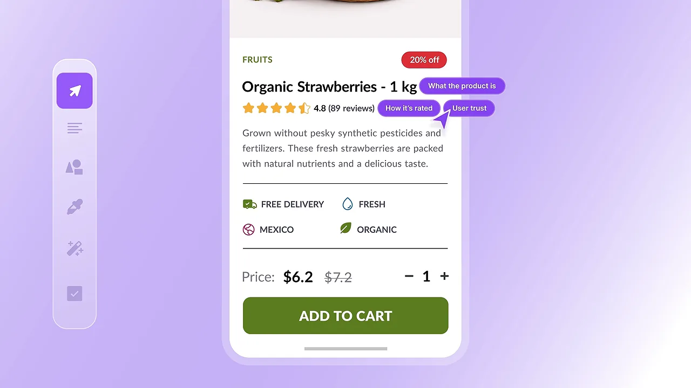
그래도 생김새는 중요해요
그렇다고 겉모습이 아무래도 좋은 건 아니에요. Malewicz는 앱 디자인 강좌 첫머리에서 제품이 성공하는 조건을 세 줄로 그려요. 문제를 풀어야 하고, 쓰기 쉬워야 하고, 보기 좋아야 해요. 가치가 먼저고, 그다음인 쓰기 쉬움과 생김새는 반반쯤이라고 봐요. 사람은 눈으로 먼저 사고 지갑은 나중에 열기 때문이에요. 보기 좋은 제품을 더 쓰기 쉽다고 느끼는 미적 사용성 효과를 근거로 들어요.
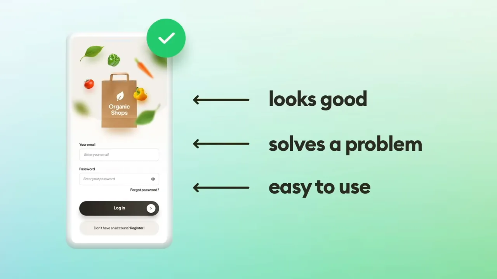
Crawford도 같은 이야기를 반대쪽에서 해요. 제안과 카피가 같은 두 판매 페이지라면 시각적 완성도가 높은 쪽이 이겨요. 사람들은 겉모습을 신뢰의 단서로 쓰거든요. 다만 순서는 분명해요. 이미 일하고 있는 판매 흐름과 증거를 두고, 디자인은 그걸 더 눈에 띄고 믿음직하게 만드는 데 써요.
덜어내는 쪽이 이겨요
토스 출신 디자이너 강영화 님이 바이브 코딩으로 제품을 만든 사람들에게 가장 자주 하는 말은 "기능을 다 넣으면 다 망한다"예요. 영어 회화 앱 Else의 첫 버전은 기능이 많았지만 아무도 쓰지 않았고, 2주 만에 만든 다음 버전은 결제 기능까지 빼고 핵심 가설 하나만 검증했어요. 프롱트의 UX(User Experience) 팁 영상도 같은 결론으로 끝나요. 사용자가 어디서 망설이고 실수하는지 보고, 한 단계를 줄이면 된다는 거예요.
기본기 ① 간격과 정렬
화면이 '어딘가 어수선하다'고 느껴질 때 가장 먼저 볼 곳은 색이 아니라 간격과 정렬이에요. 여러 영상이 이 부분만큼은 감 대신 숫자로 정하라고 말해요.
그리드부터 깔아요
Malewicz의 웹 디자인 풀 코스는 1500×1000 캔버스에 12컬럼 그리드를 까는 데서 시작해요. 오른쪽 설정 창의 값이 그대로 레시피예요. 컬럼 12개, 가운데 정렬, 컬럼 폭 64, 거터 32로 잡으면 앱 본체 폭이 1120이 돼요. 12를 고른 이유는 12, 8+4, 6+6, 4+4+4, 3×4처럼 잘 나뉘어서예요.
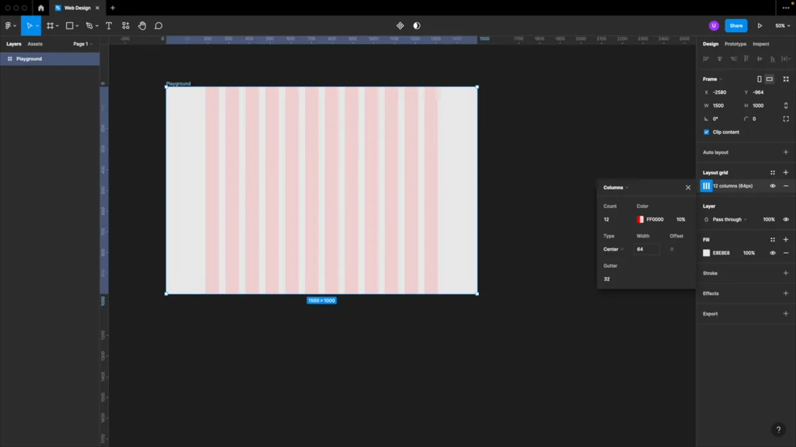
간격은 8의 배수만, 재면서 놓아요
간격은 8, 16, 24, 32, 40, 48(필요하면 64)만 써요. 이걸 손에 익히는 방법이 레드 스퀘어 메서드예요. 화면처럼 크기가 다른 빨간 정사각형을 미리 만들어 두고, 요소 사이에 직접 끼워 간격을 재요. 모바일은 8~32를 주로 쓰고, 캔버스가 넓은 웹은 24·32·40을 가장 많이 써요.
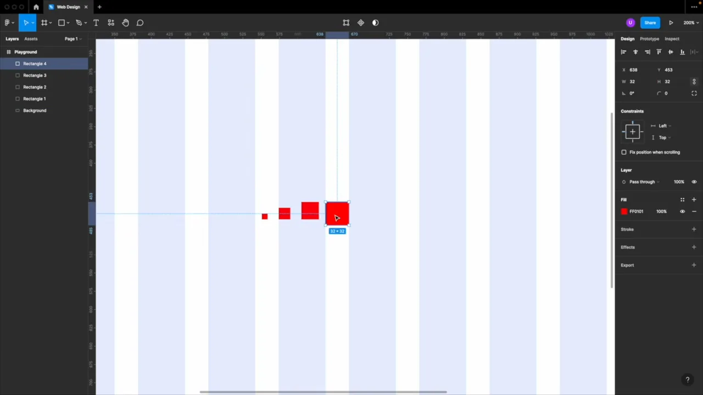
어떤 숫자를 어디에 쓸지는 근접성 원칙이 정해요. 가까이 있는 것끼리 한 묶음으로 보이니, 같은 묶음일수록 간격을 좁게 줘요. 아래 그래프는 웹 풀 코스가 쓴 값을 그대로 길이로 그린 거예요.
Malewicz는 이 원리가 몸에 익기 전에는 오토 레이아웃을 쓰지 말라고까지 해요. 자동화가 정렬을 망쳐도 알아차리지 못하기 때문이에요. 반대로 디자인 시스템 영상들(9절)은 모든 컴포넌트를 오토 레이아웃으로 만들어요. 둘은 부딪히는 말이 아니에요. 간격의 이유를 아는 사람이 쓰면 오토 레이아웃은 그 이유를 지켜 주는 도구가 돼요.
| 어디에 | 값 | 나온 영상 |
|---|---|---|
| 웹 앱 본체 폭 | 12컬럼 · 컬럼 64 · 거터 32 → 1120 | 웹 디자인 풀 코스 |
| 웹 섹션 사이 / 카드 안 / 제목↔설명 | 32 / 24 / 16 | 웹 디자인 풀 코스 |
| 모바일 화면 좌우 여백 | 390×844 프레임에 32 | 앱 디자인 코스 |
| 모바일 카드 안 여백 | 최소 16, 가장 무난한 건 24 | 앱 디자인 코스 |
| 버튼 두 개 사이 | 최소 24 (팝업 안 버튼끼리는 8부터) | 앱 디자인 코스 |
| 숫자 스케일 | 4의 배수만 (4, 8, 12 … 32, 40, 48, 64) | 디자인 시스템 풀 코스 · 처음부터 끝까지 |
정렬은 1포인트까지
딸기 상품 페이지의 세 번째 실수가 정렬이에요. 글자, 아이콘, 가격, 버튼이 조금씩 왼쪽이나 오른쪽으로 비껴 있어요. 발표자가 세로 점선을 긋자 설명문 끝이 선 밖으로 삐져나온 게 보여요. 사용자는 이걸 의식하지 못해도 화면이 덜 차분하고 덜 믿음직하다고 느껴요. 내용이 왼쪽에서 24픽셀 떨어져 시작하면 화면 전체가 같은 선을 따르게 맞춰요.
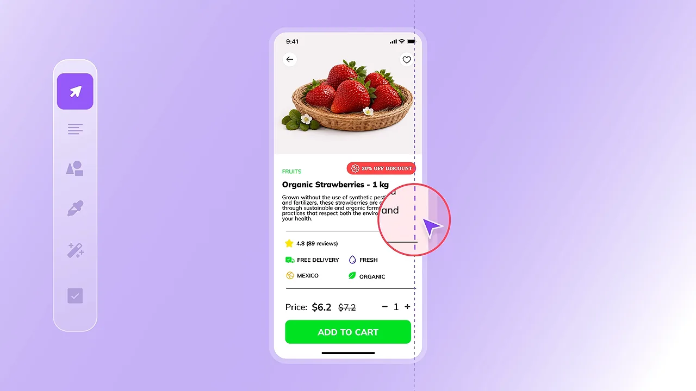
데이터 표에서는 규칙이 하나 더 있어요. 글자는 열 이름의 왼쪽 끝에, 숫자는 오른쪽 끝에 맞춰요. 그래야 자릿수가 큰 값이 저절로 앞으로 튀어나와 눈에 들어와요. Malewicz는 표에서 가장 흔한 실수로 들여쓰기가 1포인트 어긋나거나 행 높이가 들쭉날쭉한 것을 꼽아요. 둥근 박스 안에 또 둥근 요소를 넣을 때는 안쪽 모서리를 덜 둥글게 해서 대각선 여백까지 고르게 보이게 해요.
답답하면 패딩과 마진을 말해요
Solostack은 같은 빵집 페이지에서 패딩(상자 안쪽 여백)과 마진(상자와 상자 사이 바깥 여백)을 3분의 1로 줄여 봐요. 오른쪽처럼 글자는 그대로인데 화면이 훨씬 빽빽해 보여요. AI에게 "좀 더 시원하게"라고 하는 대신 "패딩과 마진을 넉넉하게"라고 말하면 고칠 곳이 정확히 전달돼요.

기본기 ② 위계: 크기·글자·색으로 순서 정하기
시각적 위계는 사용자가 무엇을 먼저 보고 무엇을 나중에 볼지 정한 순서예요. 영상들은 이 순서를 크기, 글자, 색 세 가지로 만들어요. 공통 규칙은 하나예요. 모든 게 눈에 띄려 하면 아무것도 먼저 보이지 않아요.
크기: 버튼은 입력 칸보다 커야 해요
Malewicz는 버튼과 폼 필드를 같은 높이로 맞추면 위계가 무너진다고 말해요. 화면에서 높이 60짜리 필드 위에 같은 높이 버튼을 겹쳐 놓고 빨간 안내선으로 비교하는 장면이 그 실수예요. 버튼이 60이면 필드는 44나 50으로 낮춰서, 누르는 것과 채우는 것이 한눈에 구분되게 해요.
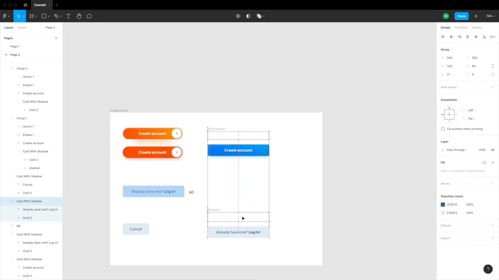
영상마다 쓴 숫자를 모으면 이래요. 앱과 웹에서 값은 다르지만 '버튼 > 입력 칸'이라는 방향은 같아요.
| 요소 | 값 | 나온 영상 |
|---|---|---|
| 모바일 버튼 높이 | 최소 44, 좋은 건 50~60 | 앱 디자인 코스 |
| 모바일 폼 필드 높이 | 44~50 (버튼보다 낮게) | 앱 디자인 코스 |
| 웹 로그인 폼 | 입력 칸 40, 버튼 44 | 웹 디자인 풀 코스 |
| 버튼 라벨 크기 | 버튼 높이의 약 3분의 1, 버튼 글자는 16 이상 | 앱 디자인 코스 |
| 본문 글자 | 14 이상, 여유 있으면 16 / 디자인 시스템 기본은 16 | 앱 디자인 코스 · 디자인 시스템 영상 |
| 누르는 영역 | 44×44pt (Apple HIG(Human Interface Guidelines)) | Claude Design 25가지 요령 |
글자: 패밀리 하나로 크기·굵기·행간만 바꿔요
딸기 페이지의 다섯 번째 실수는 글꼴 스타일이 너무 많은 거예요. 상품 페이지는 튼튼한 글꼴 패밀리 하나면 충분하고, 크기·굵기·색·행간으로 위계를 만들어요. 발표자의 규칙은 '제목은 시선을 끌고, 본문은 이해를 돕는다'예요. 그래서 빽빽한 본문은 행간을 늘리고 대비를 살짝 낮춰요. 아래 화면은 제목과 할인 배지가 서로 시선을 다투는 상태예요. '20% OFF DISCOUNT'에 아이콘까지 붙은 배지를 '20% off'로 줄이고 제목의 크기와 굵기를 다시 맞췄어요.
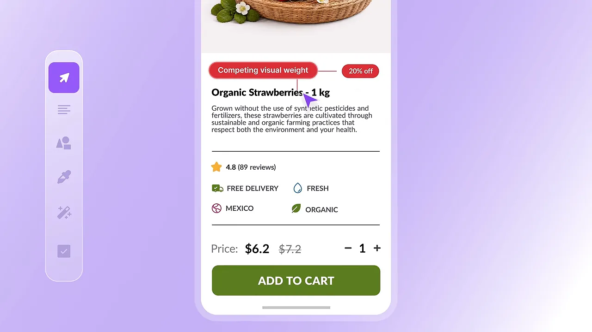
글자 크기 사다리, 즉 타입 스케일은 디자인 시스템 영상들이 숫자로 정해요. 본문 16px에 메이저 서드(1.25) 비율을 곱해 제목 크기를 뽑고, 소수점은 버리고 4의 배수로 반올림해요. 데스크톱 H1 60·H2 48·H3 40, 모바일 H1 48처럼 화면이 작아지면 비율을 줄여요. 행간을 정하는 규칙은 영상마다 달라요.
- 디자인 시스템 영상(UI Collective) — 글자 크기 × 1.2를 4의 배수로 반올림해요. 60 → 72, 48 → 56이에요.
- 앱 디자인 코스(Malewicz) — 본문 줄 간격에 황금비 1.618을 곱해요. 본문처럼 긴 글에 더 넉넉한 값이에요.
둘 다 '정해 둔 비율 하나를 끝까지 쓴다'는 점은 같아요. 글꼴 자체를 바꾸는 효과도 커요. Malewicz는 Poppins를 Plus Jakarta Sans로 바꾸기만 해도 화면이 확 나아진다고 하고, 무료이면서 안전한 선택으로 Inter, Plus Jakarta Sans, Satoshi를 꼽아요.
색: 강조색은 가장 중요한 행동 하나에만
프롱트의 첫 번째 팁이 가장 쉬운 UX 개선이에요. 저장·취소·삭제·공유 버튼이 똑같은 모양으로 늘어서 있으면 무엇을 눌러야 할지 잠깐 멈춰요. 오른쪽처럼 실제로 가장 많이 누르는 저장 하나만 파란색으로 칠하고 나머지는 흐리게 바꾸면 고민이 사라져요.
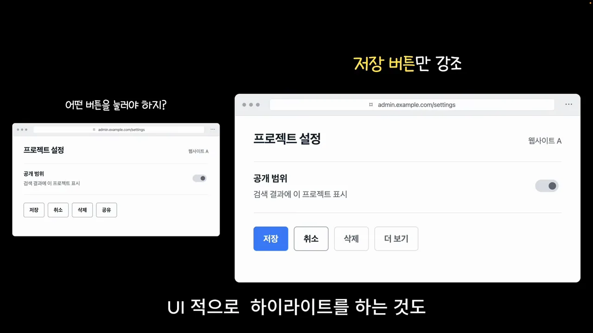
Solostack의 빵집 페이지는 같은 원리를 CTA(Call To Action) 버튼이라는 이름으로 보여 줘요. 메뉴 보기, 오시는 길, 길찾기, 전화 예약이 비슷한 크기로 흩어져 있던 페이지에서 '전화로 예약하기' 하나만 크게 두자 할 일이 바로 눈에 들어왔어요.

Malewicz의 앱 강좌도 주 색(초록)은 가장 중요한 행동에만 쓰고, 장바구니 버튼처럼 반복되는 버튼은 어두운 갈색으로 눌러요. 로그인 화면의 주 버튼조차 아주 어두운 갈색으로 칠하고 초록은 강조용으로 남겨 둬요. 색 자체는 분위기를 정하고 상품을 받쳐 주는 역할이라, 딸기 페이지처럼 신선 식품이면 채도 높은 색보다 부드럽고 자연스러운 색으로 바꿔요.
기본기 ③ 깊이와 장식
그림자, 그라디언트, 잘라 낸 사진, 유리 효과는 화면에 개성을 주는 장식이에요. Malewicz의 앱 디자인 강좌는 이걸 다섯 시간 넘게 다루는데, 결론은 의외로 단순해요. 효과는 많이 쓰는 게 아니라 아주 옅게 써야 하고, 장식인지 아닌지부터 가려야 한다는 거예요.
장식인지 가리는 질문 하나
"예쁜 디자인은 접근성이 나쁘다"는 말에 Malewicz는 규칙 하나로 답해요. 그 요소를 아예 꺼도 기능이나 가독성이 줄지 않는다면 장식이고, 장식은 대비가 낮아도 돼요. 흰 배경 위 흰 카드의 옅은 그림자가 대표적이에요. 여백과 구조가 잘 잡혀 있으면 그림자가 안 보이는 사람도 카드를 카드로 알아봐요. 반대로 버튼, 폼 필드, 글자, 스위치는 꺼지면 기능이 사라지니 대비와 크기를 반드시 지켜요(7절).
그림자: 옅게, 배경 색조로, 하나만 크게
피그마 기본 드롭 섀도는 밋밋해서 값을 바꿔요. 색은 배경을 스포이트로 찍어 밝기를 10 낮추고, 흐림은 Y의 두 배 이상, 스프레드는 음수로 줘서 카드 밑으로 살짝 모아요. 아래 화면은 하지 말아야 할 쪽이에요. 위 카드의 큰 그림자가 아래 카드까지 번져 있어요. 큰 그림자는 사용자에게 가깝게 떠 있다는 신호라 화면에서 가장 중요한 카드 하나에만 써요. 여러 장에 쓰면 깊이 정보가 너무 많아져요.

배경색을 바꾸면 그림자와 글자 색도 같이 바꿔야 해요. 방법은 배경의 색상(Hue) 값을 복사해 글자, 드롭 섀도, 블러 사각형에 붙여 넣는 거예요. 노랑·초록·파랑·보라·분홍 다섯 연습판이 모두 자연스러운 건 이 때문이에요. 글자 색 창의 HSB(Hue Saturation Brightness) 값 '266 4 8'은 보라 배경의 색조 266을 그대로 가져온 아주 어두운 글자색이에요. 파란 배경 위 초록 그림자처럼 색조가 섞이면 바로 어색해 보여요.

그라디언트와 장식 효과의 숫자
| 효과 | Malewicz가 쓰는 값 |
|---|---|
| 그라디언트 | 두 색의 색조 차이는 파랑 20~30, 주황 10~20. 대각선으로 놓되 어두운 색이 아래로 가게 해요. 티가 거의 안 나야 잘 만든 거예요 |
| 버튼 그림자 | 그라디언트의 가장 어두운 색에서 밝기 −20, Y 12 · 흐림 24 · 스프레드 −8 · 불투명도 50% |
| 보조 버튼 | 주 버튼 그림자가 시작되는 지점의 색을 찍어 칠하고, 그림자는 빼고, 글자는 진하게 |
| 입체 카드 | 이너 섀도 두 개: X·Y −8, 흐림 16의 어두운 것 + X·Y +8, 흐림 16의 흰 것 |
| 글래스모피즘 | 레이어 불투명도는 100%로 두고 채우기만 60%쯤, 배경 블러를 걸어요 |
| 뉴모피즘 | 배경과 같은 색 원에 어두운 그림자(8, 8, 흐림 16)와 흰 그림자(−8, −8, 흐림 16). 접근성이 나빠서 장식에만 |
| 오로라 배경 | 큰 원 세 개에 블러 100을 걸어 겹쳐요 |
글래스모피즘은 값보다 '뒤에 무엇이 있는가'가 더 중요해요. Solostack이 빵집 페이지에 글래스모피즘이라는 단어만 넣었을 때는 거의 달라진 게 없었어요. 배경이 밋밋하면 비칠 게 없기 때문이에요.
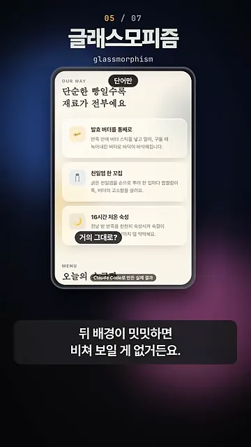
카드 뒤에 진한 색 도형을 깔아 달라고 같이 말하자 그제야 주황·파랑·빨강 원이 카드를 통해 흐릿하게 비쳤어요. Malewicz가 오로라 배경을 따로 만드는 이유도 같아요. 코드깎는노인의 UI 용어 영상은 여기에 하나를 더해요. 유리 위 글자의 대비는 꼭 챙기라는 거예요.

사진은 한 장이 아니라 카탈로그로 골라요
딸기 페이지의 두 번째 실수는 상품 사진이에요. 후보 E는 사진만 보면 좋아요. 그런데 같은 방식으로 찍은 바나나, 사과와 목록에 놓이자 배경과 조명이 제각각이라 카탈로그가 어수선해져요. 정답 F는 깨끗한 배경 위 자연스러운 딸기라서 모든 상품이 같은 규칙을 따를 수 있어요. 발표자는 이걸 '화면 하나를 디자인하는 것'과 '제품 시스템을 디자인하는 것'의 차이라고 불러요.
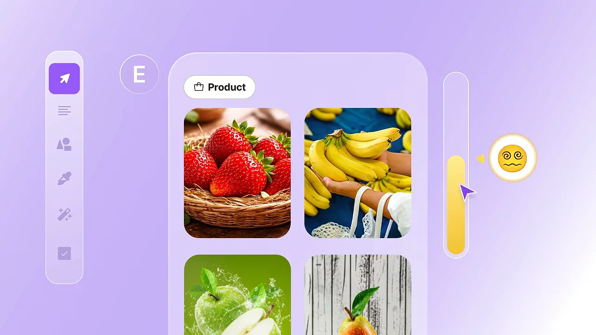
Malewicz의 두 강좌도 사진 일관성을 따로 챙겨요. 프로필 사진은 카메라를 보는 얼굴, 단순한 무채색 옷으로 고르고, 채도가 가장 낮은 사진에 맞춰 나머지의 채도와 노출을 낮춰요. 잘라 낸 사물은 모두 같은 광원 방향의 그림자를 주고, 3D 일러스트는 같은 각도와 광원으로 렌더링된 것만 섞어요. 그리고 모든 화면에 장식을 넣지는 않아요. 구매를 결정하는 상품 화면은 장식 없이 비워 둬요.
사용성: 망설이고 실수하는 순간 줄이기
사용성은 화면이 얼마나 예쁜가가 아니라, 사용자가 얼마나 덜 망설이고 덜 실수하는가예요. 프롱트의 UX 팁 16개는 바이브 코딩으로 만든 사이트에 바로 붙일 수 있는 처방을 화면 전후 비교와 짧은 React 코드로 보여 주고, 딸기 페이지 리디자인은 사는 흐름 하나를 끝까지 다듬어요. 둘을 합치면 '언제 무엇을 알려 줄까'의 목록이 돼요.
입력 폼: 언제, 어디를 알려 줄까요
프롱트는 사용자가 무언가를 입력하는 화면을 가장 불편한 곳으로 꼽아요. 첫째는 검사 시점이에요. 이메일을 한 글자 치자마자 '올바른 이메일을 입력하세요'가 뜨면 "아직 다 안 썼는데"라고 느껴요. 화면 왼쪽처럼 칸을 벗어난 뒤(onBlur)에 검사해서, 포커스가 다음 칸으로 넘어간 다음에 틀린 점과 고칠 방법을 보여 줘요.

확인 창 대신 실행 취소
할 일을 완료할 때마다 '완료 처리하시겠습니까?' 창이 뜨면 한 번 더 눌러야 해요. 화면처럼 바로 완료하고, 아래 검은 띠에 '할 일을 완료했어요'와 '실행 취소'를 보여 주면 돼요. 가만히 두면 띠는 사라져요. 요즘 alert 창을 잘 쓰지 않는 것과 같은 이유예요.

화면이 흔들리지 않게
버튼을 누르려는 순간 늦게 뜬 배너 이미지가 버튼을 밀어내면 엉뚱한 곳을 누르게 돼요. 이걸 레이아웃 시프트라고 해요. 왼쪽 카드의 빨간 점선이 원래 버튼이 있던 자리예요. 오른쪽처럼 이미지 크기(16:9 같은 비율)를 미리 잡아 두면 버튼도 이미지도 늘 그 자리에 있어요.
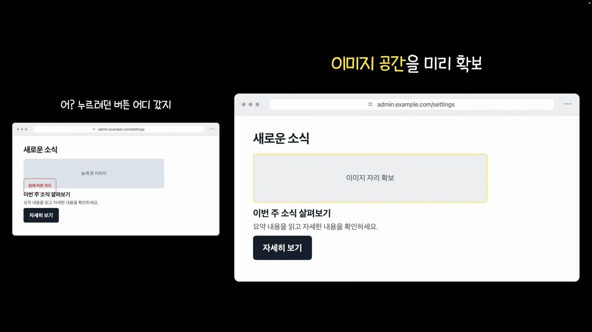
나머지 팁까지 상황별로 모으면 다음 표가 돼요.
| 이럴 때 | 이렇게 고쳐요 |
|---|---|
| 내보내기 형식처럼 선택지가 많을 때 | 자주 쓰는 셋만 보이고 나머지는 '더 보기'로. 가장 많이 쓰는 건 미리 골라 둬요 |
| 쓰던 글이 저장 실패로 날아갈 때 | 브라우저 localStorage에 초안을 임시 저장해요 |
| 휴대폰 번호 칸에 문자 키보드가 뜰 때 | type="tel", inputMode="tel"로 숫자 키패드를 띄워요 |
| 1490000처럼 큰 금액을 칠 때 | 입력하는 동안 세 자리마다 쉼표를 넣어 1,490,000으로 보여 줘요 |
| 길고 복잡한 비밀번호를 칠 때 | 칸 옆 '보기' 버튼으로 잠깐 원문을 보여 줘요 |
| 큰 파일을 올릴 때 | 빙글빙글 아이콘 대신 진행률(%)을 보여 주고, 올리는 중엔 버튼을 막아 중복 요청을 막아요 |
| 목록이 비어 있을 때 | '데이터가 없습니다' 대신 '첫 프로젝트를 만들어 볼까요?'와 만들기 버튼을 보여 줘요 |
| 저장에 실패했을 때 | 'Error 500' 대신 '저장하지 못했어요. 글은 그대로 있어요'와 '다시 시도' 버튼 |
| 합계처럼 큰 숫자가 바뀔 때 | 이전 값에서 새 값까지 숫자가 올라가는 애니메이션. 큰 변화에만 써요 |
| 상품을 보고 검색으로 돌아올 때 | 사용자가 건 필터를 유지하고, 따로 '초기화' 버튼을 둬요 |
| 다음 상품을 넘길 때마다 로딩이 뜰 때 | 다음 데이터를 미리 받아 둬요(프리패치) |
'목록이 비어 있을 때'의 화면을 빈 상태라고 불러요. 여기서 다음 행동을 보여 주는 게 첫 사용을 가장 쉽게 만드는 방법이에요. 프롱트는 정리 화면에서 이 16개를 외우기보다 사용자를 관찰하고, 피드백을 받고, 실수하지 않게 만드는 일을 되풀이하라고 말해요.
사는 흐름을 끝까지 설계하기
딸기 페이지의 마지막 실수는 구매 버튼이에요. 대문자로 소리 지르는 'ADD TO CART' 버튼은 수량 선택기와 멀리 떨어져 있었어요. 발표자는 선택기를 버튼 바로 옆에 붙이고, 선택기 안에 kg 단위를 넣고, 버튼 안에 총액을 넣었어요. 누르기 전에 낼 돈을 알게 되니 말풍선처럼 불확실함이 사라져요.
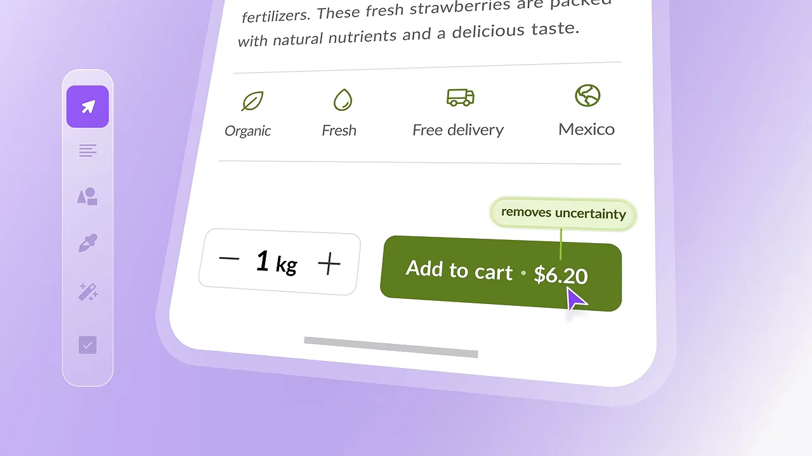
여기서 멈추지 않고 하단 고정 구매 영역을 더해요. 사용자는 아래까지 읽고 함께 산 상품까지 본 뒤에야 마음을 정하기도 하니까요. 화면처럼 'Often bought with' 목록까지 내려가도 수량 선택과 장바구니 버튼이 맨 아래에 붙어 있어요. 0.5·1·2·3 kg처럼 자주 사는 무게를 미리 옵션으로 두는 것도 더했는데, 옵션은 실제 구매 데이터로 정하라고 해요.
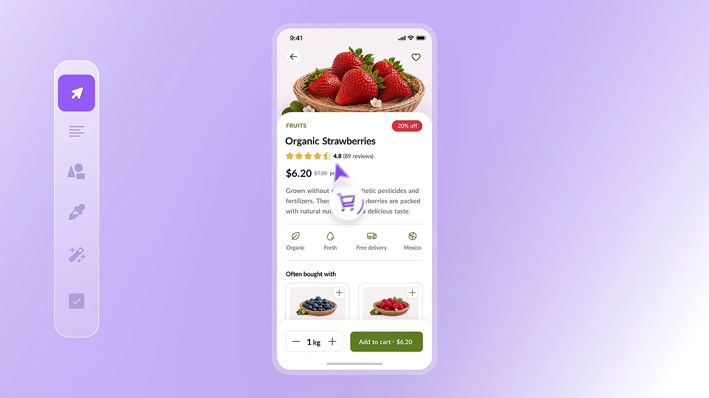
접근성은 처음부터 넣어요
접근성은 마지막에 덧대는 장식이 아니라 처음부터 기획서와 컴포넌트에 넣을 요구사항이에요. Sam Crawford가 트렌드 다섯 가지 중 하나로 꼽은 이유는 법과 비용 때문이에요. 유럽 접근성법(EAA(European Accessibility Act)) 요구사항이 2025년 6월 28일부터 적용되기 시작했고, 세계보건기구는 세계 인구 여섯 명 중 한 명이 어느 정도의 장애를 겪는다고 추정해요. 어떤 사이트가 대상인지는 서비스와 현지 규정에 따라 달라서 법률 조언은 아니라고 덧붙여요.
디자인 작업으로 바꾸면 일곱 줄이에요
법 이야기는 막연해도 디자인 작업은 구체적이에요. 슬라이드의 일곱 줄이 그 목록이에요. 키보드 탐색, 보이는 포커스 상태, 충분한 대비, 입력 칸 레이블, 의미를 담은 이미지의 대체 텍스트, 읽기 쉬운 글자, 누르기 쉬운 컨트롤이에요.

점검 방법도 간단해요. 마우스를 내려놓고 키보드로만 페이지를 다녀 봐요. 지금 어디 있는지 보이는지, 메뉴·폼·주요 CTA에 닿는지, 들어간 컴포넌트에서 빠져나올 수 있는지 확인해요. 화면을 확대해서 내용에 숨 쉴 공간이 남는지도 봐요. 햇빛 아래에서 폰을 보는 사람도, 보조 기술을 쓰는 사람도 같은 덕을 봐요.
대비는 기능 요소만, 도구로 재요
Malewicz는 앱 강좌 마지막에 피그마 대비 검사 플러그인으로 버튼, 본문, 폼 필드만 'AA' 기준까지 확인해요. 장식은 대비가 낮아도 된다는 5절의 규칙과 짝을 이루는 장면이에요. 화면에서 초록 견본이 대비율 4.99로 'AA'는 통과, 'AAA'는 실패로 나와요. 처음엔 초록 버튼이 통과하지 못해서 플러그인 안에서 겨우 통과할 만큼만 색을 조정했어요.

포커스 링을 디자인 파일에 그려요
키보드로 Tab을 누르며 이동하는 사람에게는 포커스 링이 커서예요. UI Collective의 디자인 시스템 강좌는 이걸 피그마에도 그려서 개발자에게 보여 줘요. 화면처럼 2px 테두리 사각형을 버튼 바깥 2px에 절대 위치로 띄우고, 제약을 좌우·상하로 걸어 라벨 길이가 바뀌어도 따라가게 해요. 색은 border/focus라는 토큰으로 따로 둬요.
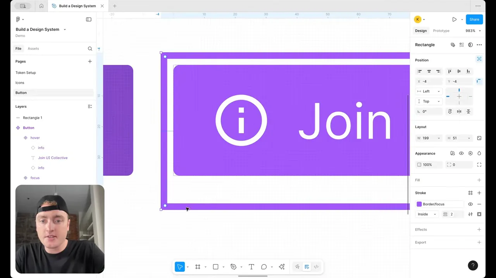
색만으로 말하지 않아요
Malewicz의 웹 강좌에서 공사로 닫은 매장은 로고를 회색으로 바꾸는 데서 그치지 않고 'closed' 배지를 달아요. 색만으로는 모든 사람이 알아보지 못하기 때문이에요. 앱 강좌의 탭 바도 선택 상태를 색만이 아니라 원, 선, 빛 같은 모양으로도 구분해요.

다른 영상들이 보탠 기준도 있어요.
- 누르는 영역은 44×44pt 이상이에요. Apple HIG의 숫자고, Claude Design 25가지 요령 영상은 이걸 스킬로 만들어 AI가 짐작 대신 따르게 해요. 같은 카드에 명암비 4.5:1도 적혀 있어요.
- 본문은 16px이 기본이에요. 디자인 시스템 영상은 14px부터는 글꼴에 따라 위험할 수 있고, 12px은 캡션이나 약관용으로만 남긴다고 해요.
- 필수 입력 표시 별표는 라벨 앞에 둬요. 디자인 시스템 풀 코스가 접근성 이유로 짚은 부분이에요.
- 움직이는 효과는 운영체제의 '동작 줄이기' 설정에서 줄여요(16절).
- 켜짐·꺼짐 같은 상태는 화면에 보이게 그려요. MiladiCode의 3D 게임 사이트에서는 소리 버튼의 상태가 눈에 안 보이는
aria-pressed속성에만 있었어요. 그래서 버튼을 눌러도 모양이 그대로였고, 자동 테스트가 이걸 실패로 잡았어요. 막대와 켜짐·꺼짐 글자를 더하자 통과했어요(17절). - Vercel 웹 디자인 가이드라인은 키보드 조작, 오류 표시처럼 놓치기 쉬운 항목을 접근성·포커스·폼·애니메이션·다국어 등으로 나눠 점검해요(15절).
디자인 시스템 ① 세 단계 토큰
3~7절의 규칙을 화면마다 손으로 지키면 금방 흐트러져요. 디자인 시스템은 이 규칙을 한곳에 모아 두는 장치예요. UI Collective 채널의 두 강좌는 3시간 반과 4시간짜리인데, 순서와 구조가 거의 같아요. 먼저 디자인 토큰을 만들고, 그 토큰으로 컴포넌트를 조립해요.
토큰이 뭐예요
디자인 토큰은 컴포넌트에 입히는 시각 값이에요. 색, 타이포그래피, 그림자, 간격, 테두리, 모서리 둥글기가 대표적이에요. 그런데 #000000 같은 헥스 코드는 그 자체로는 토큰이 아니에요. 여기에 '액션 글자 색' 같은 역할을 붙여 여러 컴포넌트가 함께 쓸 때 토큰이 돼요. 숫자 8도 '중간 radius'라는 역할이 붙어야 토큰이에요. 데모에서 Text/Action 색 하나를 분홍으로 바꾸자 그 변수를 쓰는 글자 세 개가 한꺼번에 바뀌어요. 한 곳만 바꾸면 쓰는 곳이 모두 바뀌는 것, 그게 토큰의 힘이에요.
어떤 토큰이 필요한지는 디자인이 정해요. 이상적인 순서는 '디자인 → 토큰 → 디자인 시스템'이라서, 처음 하는 사람에게는 마음에 드는 화면부터 준비하라고 권해요.
세 단계: Brand → Alias → Mapped
토큰을 짜는 방법은 크게 둘이에요. 많은 공개 키트가 쓰는 2단(Primitive → Semantic)과, UI Collective가 5년째 쓰는 3단(Brand → Alias → Mapped)이에요. 2단은 사실상 Brand와 Alias를 하나로 합친 모양이라 틀린 건 아니고, 이미 쓰고 있다면 갈아엎을 필요도 없어요. 다만 브랜드가 여러 개가 되면 한계가 드러난다고 해요.
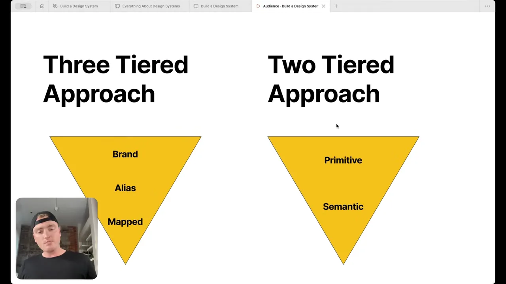
세 단계가 무엇을 담는지 한 그림으로 그리면 이래요. 왼쪽에서 오른쪽으로 갈수록 이름이 날값에서 쓰임새로 바뀌어요. 실제로 컴포넌트에 칠하는 건 맨 오른쪽 Mapped 토큰뿐이에요.
- Brand — 이름도 역할도 없는 날값만 둬요. 헥스 색, 폰트 이름, 4px 배수 숫자 스케일 하나가 전부예요. 색은 보라, 빨강, 초록, 회색, 주황, 파랑 여섯 개면 시작하기 충분해요.
- Alias — 스케일마다 역할을 붙여요. 보라 → Primary, 빨강 → Error, 초록 → Success, 회색 → Neutral, 주황 → Warning, 파랑 → Information이에요. 회색을 'Text'라 부르지 않는 건 글자가 요소 이름이라 Mapped에서 쓸 말이기 때문이에요.
- Mapped — 컴포넌트에 칠하는 토큰이에요. 어떤 컴포넌트든 필요한 색은 surface(배경), border(테두리), text(글자), icon(아이콘) 네 종류라서 이 네 묶음으로 나눠요.
왜 굳이 역할을 나눌까요. 브랜드 색과 에러 색이 둘 다 빨강이어도, 에러 알림은 Primary가 아니라 Error 스케일에서 색을 가져와야 해요. 슬라이드에서 Primary 쪽에 줄이 그어진 이유예요. 그래야 개발자가 '빨간 건 다 에러'로 착각하지 않아요.
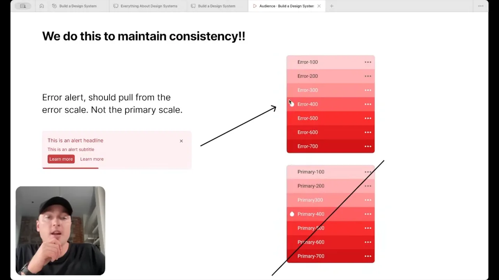
색 스케일은 불투명도로 직접 뽑아요
발표자는 디자인 시스템에서 가장 많이 틀리는 곳으로 색 스케일을 꼽고, 플러그인이나 AI에 맡기지 않아요. 기준색(500)을 흰 배경 위에 놓고 불투명도를 80·60·40·20·10%로 낮춘 뒤, 보이는 색을 스포이트로 다시 찍어 불투명한 헥스 값으로 만들어요. 변수에 불투명도를 넣으면 배경에 따라 색이 달라지기 때문이에요. 어두운 쪽은 검은 배경 위에서 같은 일을 해요.
이름은 단계 크기에 맞춰 붙여요. 20%씩 내려간 단계가 400·300·200·100이고, 10%만 내려간 마지막 단계는 50이에요. 어두운 쪽도 마지막 10% 단계는 950이에요. 흔한 실수는 가장 밝은 색을 무조건 100으로 두는 거예요. 화면 왼쪽 스케일에 250이 끼어 있는 게 이 규칙 덕분이에요. 200과 300 사이 색이 필요하면 불투명도 50%로 250을 만들 수 있어요.

다크 모드와 두 번째 브랜드
다크 모드는 '가장 쉬운 일'이라고 해요. Mapped에 Dark 모드를 더하고 밝기를 뒤집으면 돼요. 화면처럼 제목 글자는 Light에서 Neutral/800, Dark에서 Neutral/50이 돼요. 브랜드 기본색처럼 다크 모드에서도 바뀌면 안 되는 색은 Alias에 default-fixed로 만들어 두고 두 열 모두 그걸 가리키게 해요. 순서는 라이트 모드로 컴포넌트까지 만들고 접근성 검사를 마친 뒤에 다크 모드예요.
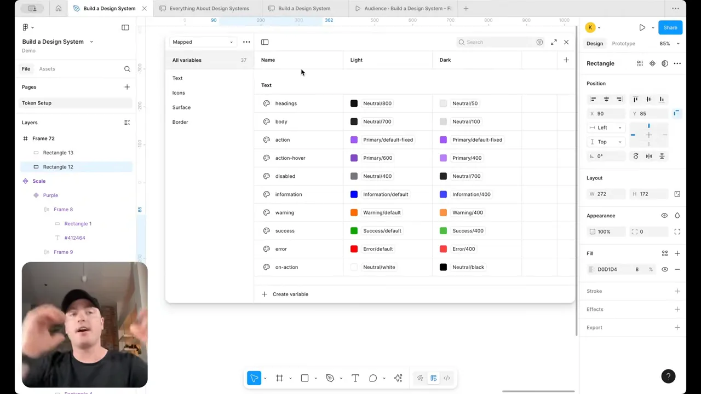
두 번째 브랜드는 갈래가 둘이에요. 코카콜라·코크 제로처럼 기본색만 다른 'Branded house'라면 Alias에 Brand 1·Brand 2 모드를 만들어 Primary만 다른 스케일로 바꿔요. 스프라이트·몬스터처럼 색·글꼴·반경이 다 다른 'House of brands'라면 브랜드마다 디자인 시스템을 따로 두라고 권해요.
기기마다 바뀌는 값과 변수 스코핑
글자 크기처럼 데스크톱과 모바일에서 달라지는 값은 네 번째 컬렉션 Responsive에 Desktop·Mobile 모드로 둬요. 색 컬렉션에 넣으면 바뀌지 않는 색까지 모드가 생기기 때문이에요. 글자 크기와 행간은 문자열이 아니라 숫자 변수로 만들어야 해요. 발표자도 문자열로 만들었다가 다시 만든 적이 있대요.
마지막 손질이 변수 스코핑이에요. 컴포넌트에 직접 칠하면 안 되는 Brand 색은 선택 목록에서 숨기고, 테두리 두께는 선에만, 반경은 모서리에만 보이게 해요. 컴포넌트 전용 토큰(button-purple, menu-purple)은 만들지 말라고도 강조해요. 모든 컴포넌트가 한 부모 색을 가리키면 그 색만 바꾸면 되지만, 컴포넌트마다 토큰이 있으면 50~60개를 일일이 고쳐야 해요.
디자인 시스템 ② 컴포넌트는 같은 틀로
토큰이 준비되면 컴포넌트를 만들어요. 두 강좌 모두 첫 컴포넌트인 버튼에서 틀을 정하고, 나머지 20~30개를 그 틀 그대로 찍어 내요. 틀이 같으니 어떤 컴포넌트를 열어도 속성 이름과 상태가 같은 자리에 있어요.
버튼 하나로 정하는 틀
- 오토 레이아웃으로 묶어요 — 텍스트와 아이콘을 Shift+A로 묶고 패딩으로 크기를 정해요. 고정 너비는 글자가 길어지면 넘쳐요. 아이콘은 켜고 꺼도 버튼 높이가 바뀌지 않게 20×20으로 맞춰요. 라벨을 길게 고쳐도 패딩이 그대로 유지돼요
- Mapped 토큰을 칠해요 — 배경 surface/action, 글자 text/on-action, 테두리 border/action이에요. 테두리는 배경과 같은 색이어도 꼭 넣어요. 나중에 테두리가 필요해지면 모든 컴포넌트를 다시 손봐야 하거든요.
- 속성을 달아요 — 라벨은 텍스트 속성, 왼쪽·오른쪽 아이콘은 켜고 끄는 레이어 속성과 바꿔 끼우는 인스턴스 스왑 속성을 함께 둬요. 인스턴스 스왑 이름 앞에 '↳'를 붙여 부모-자식 관계를 보이게 해요.
- 베리언트를 만들어요 — Status(default·hover·focus·disabled) × Type(default·outline·transparent)이에요. 'default default'처럼 같은 단어가 겹치면 AI가 헷갈리니 피해요.
- 포커스 링을 붙여요 — 7절에서 본 2px 테두리를 버튼 바깥 2px에 띄워요. 테두리는 outside로 통일해야 지울 때 높이가 안 바뀌어요.
그 결과가 아래 버튼 세트예요. 세 줄이 Type, 네 칸이 Status 베리언트이고, 오른쪽 Properties 패널에 Status, Type, Label, icon left, '↳ icon left' 같은 속성이 위 순서대로 붙어 있어요.

아웃라인 버튼에 흰 배경이 필요해지자 발표자는 'button-outline' 같은 전용 토큰이 아니라 surface/default-secondary라는 일반적인 이름을 추가해요. 변수는 필요할 때만, 일반적인 이름으로 늘리라는 거예요.
작은 부품을 조립해 큰 컴포넌트로
두 강좌가 모두 쓰는 방식이 아토믹 디자인이에요. 컴포넌트 안에 컴포넌트를 넣어요. 화면의 인풋은 세 부품을 쌓은 거예요. 위에서부터 라벨, 필드, 힌트 문구예요. 바깥 컴포넌트에서 '중첩 인스턴스' 속성을 켜면 안쪽 부품의 속성을 바깥에서 그대로 바꿀 수 있어요.
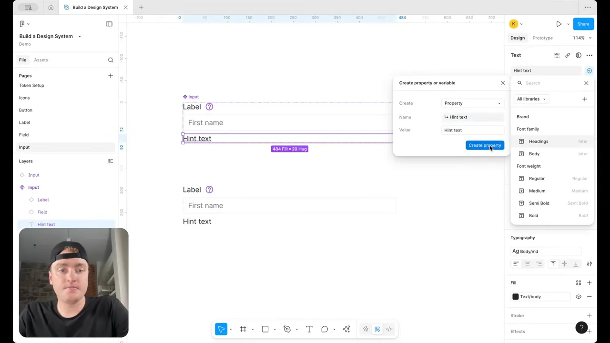
| 큰 컴포넌트 | = 이렇게 조립해요 | 요령 |
|---|---|---|
| 인풋 | 라벨 + 필드 + 힌트 | 필드 안 플레이스홀더를 fill로 둬서 오른쪽 아이콘이 늘 끝에 붙게 해요 |
| 드롭다운 | 인풋 + 메뉴 | 메뉴를 컴포넌트 프레임 밖으로 빼서 열렸을 때 아래 요소를 밀지 않고 덮게 해요 |
| 메뉴 | 메뉴 아이템 × 여러 개 + 스크롤바 | 구분선 대신 아래 테두리. 발행하지 않을 부품은 이름 앞에 마침표(.menu item) |
| 브레드크럼 | 링크 인스턴스를 이어 붙임 | 마지막 항목은 화살표를 숨기고, 항목은 6개 안쪽으로 |
| 스낵바 | 아이콘 + 제목 + 설명 + 링크 + 닫기 + 진행 막대 | 바닥의 진행 막대가 자동으로 사라지는 시간을 보여 줘요 |
| 테이블 | 셀 → 열·행 → 테이블 | 열 너비는 크기 0인 원 두 개 사이 간격으로 정해서 인스턴스를 떼지 않고 바꿔요 |
발행하고, 개발자와 이름을 맞춰요
다 만든 파일은 라이브러리로 발행해야 다른 파일에서 구독할 수 있어요. 발행은 '이제 다른 사람이 이 시스템을 써도 된다'는 뜻이에요. 첫 발행은 아이콘 수천 개와 그 베리언트까지 올라가서 10~15분 걸렸어요. 이후 고쳐서 다시 발행하면 바뀐 컴포넌트만 목록에 떠요.
모바일용 디자인 시스템을 따로 만들 필요는 없어요. 웹 상단 내비게이션처럼 화면 크기에 따라 모양 자체가 달라지는 컴포넌트에만 mobile 베리언트를 더해요. 온보딩 흐름에서만 쓰이는 카드처럼 한 파일에서만 쓰이는 건 시스템에 넣지 말고 그 파일의 로컬 컴포넌트로 둬요.
개발자 핸드오프에서는 Radix 같은 프레임워크를 쓴다면 Figma의 속성·베리언트 이름과 기본값을 문서와 1:1로 맞춰야 해요. 그렇지 않으면 디자인과 코드가 어긋나 기술 부채가 쌓여요. IBM(International Business Machines) Carbon 같은 큰 회사 시스템은 참고만 하고 그대로 베끼지 말라고도 해요. 그들의 사정과 기술 부채까지 따라 들어오기 때문이에요.
디자인 시스템 ③ AI에게는 만들게 말고 가르쳐요
"AI가 디자인 시스템을 만들어 줄 수 있나요?" UI Collective의 두 영상('디자인 시스템 처음부터 끝까지'와 'AI로 디자인하기')은 같은 답을 해요. 아니요. 스타일 몇 개와 버튼 하나는 디자인 시스템의 1000분의 1일 뿐이라는 거예요. 대신 다 만든 시스템을 AI가 따르게 가르치는 건 할 만하고, 그 방법이 스킬이에요.
AI가 만든 토큰과 컴포넌트에서 생기는 일
발표자가 Claude에게 토큰 세트를 만들게 하자 화면 같은 페이지가 나왔어요. bg/canvas, bg/surface, bg/raised처럼 그럴듯한 이름이 늘어서 있지만, 언제 무엇을 써야 하는지, 내 제품에 맞는 이름인지는 알 수 없어요. 결국 AI가 준 결과를 거꾸로 해석하는 데 직접 만드는 것보다 더 많은 시간이 든다고 해요.

'AI로 디자인하기' 영상은 비유를 하나 들어요. 부엌을 맡기면서 "어두운 느낌"이라고만 하면 마호가니 바닥이 나오듯, AI도 제품과 브랜드를 모르면 엉뚱하게 만들어요. 다크 모드를 원시값(프리미티브)에 넣어 gray-100이 어디서든 같은 다크 값이 되는 것도 AI가 자주 하는 실수인데, 이게 디자인 시스템이 깨지는 대표적 원인이라고 해요. 컴포넌트도 마찬가지예요. Figma 에이전트가 만든 팀원 테이블은 그럴듯했지만, 상태 열을 배지에서 날짜로 바꾸자 열과 머리글 정렬이 어긋났어요.
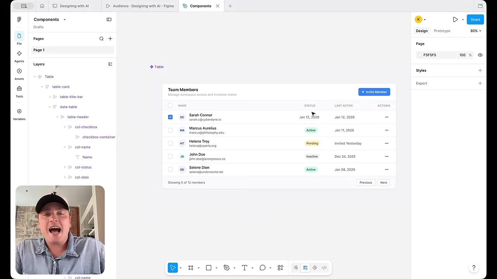
발표자의 결론은 "AI로 만들면 10시간 만들고 100시간 해석하게 된다, 3시간 들여 직접 배우라"예요. 맡겨도 되는 일도 있어요. 타입 스케일 계산 같은 반복 작업이에요. '메이저 서드 1.25, 줄 높이는 글자 크기의 1.2배, 4의 배수로 반올림'처럼 원리를 구체적으로 지시하면 Claude Code가 계산하고, Figma MCP(Model Context Protocol)로 그 값을 Responsive 컬렉션에 넣어 줘요.
시스템을 다섯 갈래 스킬로 가르쳐요
다 만든 디자인 시스템을 AI에 연결할 때는 파일 전체를 한 번에 주지 않아요. 슬라이드의 깔때기처럼 토큰, 컴포넌트, 간격과 모양, 규칙과 기술 부채로 나누고, 타입 스타일을 하나 더 따로 둬서 다섯 갈래 스킬을 만들어요.
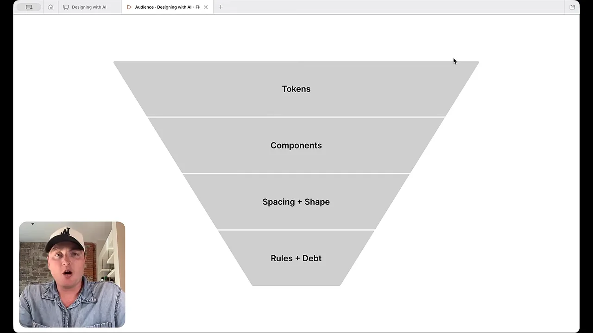
| 스킬 | 무엇을 담나요 | 주의할 점 |
|---|---|---|
| 변수(토큰) | 실제로 쓰는 Mapped 변수만, 이름·라이트 값·다크 값·설명을 표로 | 설명에 '언제 쓰고 언제 쓰지 않는지'를 적는 게 가장 중요해요 |
| 컴포넌트 | 폼 요소·내비게이션·데이터 표시처럼 그룹마다 하나씩. 베리언트, 속성, '인풋 = 라벨 + 필드' 같은 조합까지 | 한꺼번에 시키지 말고 그룹별로, 받은 뒤 컴포넌트마다 확인해요 |
| 타입 스타일 | 스타일 목록만 | 용도 규칙은 일부러 넣지 않아요 |
| 간격과 모양 | 패딩·갭·모서리 반경·테두리 두께를 '나머지 담는' 스킬 하나로 | — |
| 규칙과 기술 부채 | '선택지가 4개 넘으면 체크박스' 같은 사용 규칙, 고치는 데 너무 비싸서 안고 가는 문제 | 안 적으면 AI가 감사 중에 그걸 고치려 들어요. "주니어를 온보딩할 때 무엇을 말해 주나?"에 답하면 그게 내용이에요 |
아래는 폼 요소 스킬을 만든 결과예요. 왼쪽 대화에 '인풋 = 라벨 + 필드', '드롭다운 = 인풋 + 메뉴'처럼 조합이 정리돼 있고, 오른쪽 스킬 파일에는 .menu item 같은 내부 부품의 속성 표가 따로 있어요.

효과는 분명했어요. 스킬로 만든 화면은 예쁘진 않아도 변수, 텍스트 스타일, 버튼 컴포넌트를 실제로 썼어요. 스킬 없이 Figma 에이전트가 만든 화면은 컴포넌트 대신 도형을 쓰고, 채우기에 테두리 변수를 쓰는 식으로 엉망이었어요. 발표자는 Claude 등의 '디자인 시스템 동기화' 기능이 일부 컴포넌트만 잡는다며 조심하라고 하고, Anthropic 디자인 플러그인 중 디자인 시스템 관리 스킬은 믿지 않는다고 해요. 대신 접근성 검토 스킬은 Figma 화면 하나에서 22건(심각 3, 주요 13, 경미 6)을 WCAG(Web Content Accessibility Guidelines) 기준과 함께 찾아냈다고 높이 쳐요.
같은 채널의 다른 답: 작게 줄인 브랜드 스킬
UI Collective의 세 번째 영상 '시니어 디자이너 3단계'는 크기에서 다른 답을 내놓아요. 다 만든 시스템을 통째로 가르치지 않고, AI가 소화할 만큼 작은 '미니 디자인 시스템'을 스킬로 만들어요. 슬라이드처럼 색은 80개가 아니라 20개, 컴포넌트는 50개가 아니라 6개쯤이에요. 진짜 디자인 시스템을 통째로 넣으면 AI가 소화할 정보가 너무 많아서 오히려 슬롭을 피하기 어렵다는 거예요.
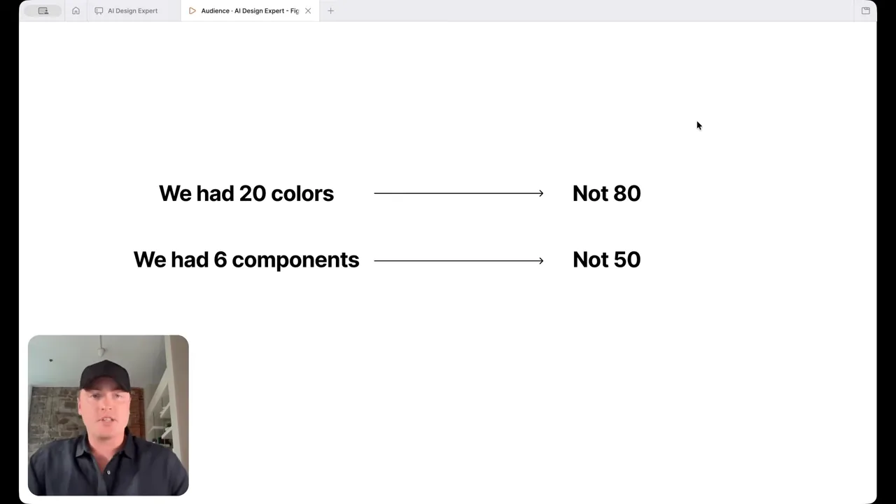
만드는 순서는 둘이에요. 먼저 Claude에게 'Vantage'라는 가상 금융 제품의 브랜드 가이드라인을 만들게 해요. 라이트 모드, 부드러운 뉴트럴 톤, 넉넉한 여백 같은 조건을 주고 Mobbin의 경쟁사 화면을 바탕으로 삼게 해요. 나온 가이드라인에는 색, 타이포그래피, 간격과 레이아웃, 컴포넌트, 페이지 원형이 들어 있어요. 그다음 이 PDF(Portable Document Format)를 첨부해 'Vantage 화면을 만들거나 고칠 때마다 이 가이드라인을 따르게 하는 스킬'을 만들게 해요. 나온 스킬은 SKILL.md, 토큰 파일, 참고 문서로 나뉘고 '34개의 강제 규칙'을 담았어요.
여기서 앞의 두 영상과 갈려요. 이 영상에서는 가이드라인 자체를 Claude가 만들었어요. 발표자도 그래서 이게 완전한 디자인 시스템이 아니라 출발점이라고 여러 번 강조해요. 색 단계나 사용 사례를 다 담지 않았다는 거예요. 마지막으로 "Stripe에서 영감을 받은 Vantage 대시보드"를 요청하자, Claude는 Mobbin으로 Stripe 화면을 찾아보고 Vantage 스킬을 읽어 둘을 합쳤어요. 총 거래액 그래프 아래 지표 카드 네 장이 가이드라인 PDF의 카드 모양과 거의 같아요.
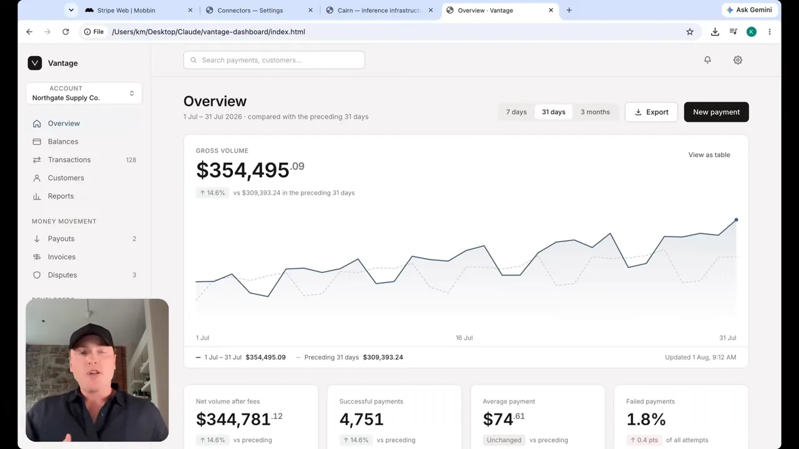
두 답을 나란히 놓으면 이래요. 다섯 갈래 스킬은 이미 있는 큰 시스템을 나눠서 가르치고, 미니 시스템은 처음부터 작게 줄여서 가르쳐요. 방법은 달라도 AI에게 한 번에 너무 많이 주지 않는다는 점은 같아요.
화면을 말로 짚는 UI 용어
"오른쪽에서 쓱 나오는 거"라고 해도 AI는 비슷하게 만들어요. 하지만 이름을 알고 말하면 무엇을, 어디서, 어떻게 보여 줄지가 한 번에 전달돼요. 코드깎는노인의 영상은 UI 용어 24개를, Solostack의 2분짜리 영상은 7개를 보여 주는데, 둘이 하는 말은 같아요. '예쁘게 해 줘'는 고칠 곳을 알려 주지 않고, 용어가 고칠 곳의 주소 역할을 한다는 거예요.
요청 공식: 용어 + 동작 + 조건
코드깎는노인이 정리한 공식은 세 칸이에요. 화면처럼 UI 용어(Drawer)에 원하는 동작(오른쪽에서 열림)과 적용 조건(설정 버튼 클릭, Esc 키로 닫힘)을 붙여요. "설정 버튼을 누르면 오른쪽 드로어가 슬라이드로 열리게 해 줘"에는 무엇·어디서·어떻게가 다 들어 있어요.
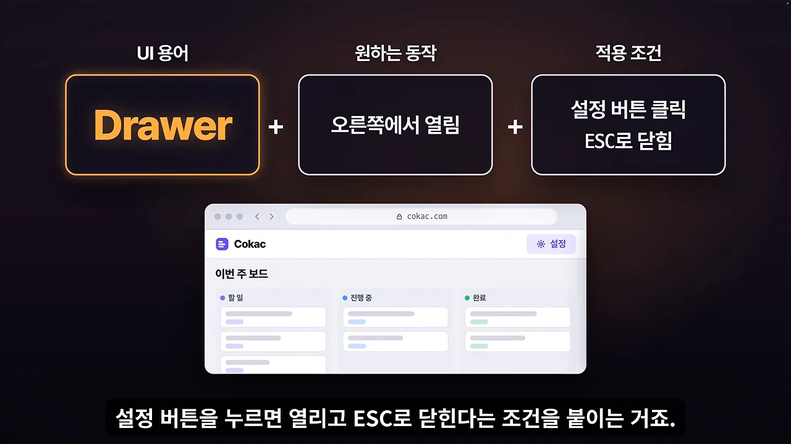
비슷해 보이는 용어도 쓰임이 달라요. 모달은 화면 한가운데 창을 띄워 집중을 요구하고, 드로어는 옆에서 열려 하던 흐름을 유지해요. 삭제 확인처럼 꼭 멈춰야 하는 일은 모달, 설정처럼 보면서 고치는 일은 드로어가 맞아요.

용어 한 장 정리
두 영상에 나온 용어를 갈래별로 모았어요. Solostack 영상에만 나온 것은 따로 표시했어요.
| 갈래 | 용어 | 뜻 · 쓸 때 |
|---|---|---|
| 레이아웃 (페이지의 뼈대) | Hero Section | 첫 화면의 대표 영역. 핵심 버튼은 CTA 버튼이라고 불러요 |
| Responsive Layout | 화면 폭에 맞춰 배치가 바뀌어요. 데스크톱 3열·태블릿 2열·모바일 1열처럼 열 수까지 정해 줘요 | |
| Card Layout | 반복되는 정보를 독립된 박스로 나눠요 | |
| Bento Grid | 크기가 다른 카드를 섞은 격자. 도시락(벤토)에서 온 이름이에요 | |
| Sidebar Layout | 왼쪽 메뉴 고정, 오른쪽 작업 공간. 대시보드에 많아요 | |
| Sticky Header | 스크롤해도 위에 붙어 있는 헤더예요 | |
| Split Layout | 이미지와 글을 좌우로 나눠요. 좁아지면 위아래로 쌓아요 | |
| 컴포넌트 (화면 위 부품) | Tabs / Accordion | 탭은 옆으로 바꿔 보고, 아코디언은 아래로 펼쳐 봐요. 아코디언은 FAQ에 흔해요 |
| Modal / Dialog | 가운데 창으로 집중을 요구해요. 뒤를 덮는 막은 오버레이(백드롭)예요 | |
| Drawer | 옆에서 서랍처럼 열려 하던 일을 덜 끊어요 | |
| Dropdown | 버튼 아래로 목록이 펼쳐져요 | |
| Tooltip | 아이콘 뜻을 짧게 알려 줘요 | |
| Toast / Snackbar | 결과를 잠깐 띄웠다 사라지는 알림이에요 | |
| Carousel | 카드를 옆으로 넘겨 봐요 | |
| Skeleton Loading | 로딩 중 회색 윤곽을 먼저 보여 줘요 | |
| CTA 버튼 | 방문자가 꼭 눌렀으면 하는 버튼 딱 하나 (Solostack) | |
| 효과 (매끄러움) | Hover Effect | 마우스를 올리면 반응해서 누를 수 있다는 신호가 돼요 |
| Scroll Reveal | 화면에 들어오는 순간 나타나요 | |
| Stagger Animation | 카드가 0.1초 간격처럼 시간차를 두고 나타나요 | |
| Smooth Transition | 상태 변화를 200ms 정도로 부드럽게 이어요 | |
| Glassmorphism | 반투명 유리 질감. 뒤에 색을 깔고, 글자 대비를 꼭 챙겨요 | |
| Neubrutalism | 두꺼운 테두리, 쨍한 원색, 강한 대비로 일부러 투박하게 (Solostack) | |
| Parallax Scrolling | 앞뒤가 다른 속도로 움직여 깊이감을 줘요. 약하게 쓰고 동작 줄이기 설정에서는 줄여요 | |
| Scroll Snap | 스크롤을 놓으면 섹션에 딱 맞춰 멈춰요 | |
| Micro-interaction | 좋아요 하트, 저장 체크 같은 작은 반응이에요 |
표의 용어 중 몇 개는 본문 여러 곳에 다시 나와요. 히어로 섹션은 17절의 3D 랜딩 페이지에서, 벤토 그리드는 아래 Solostack 예시에서, 스켈레톤 로딩과 마이크로 인터랙션은 16절의 움직임에서 다시 봐요.
고칠 곳과 용어를 같이 짚어요
Solostack은 일곱 단어를 첫 화면·간격·배치·분위기·움직임 다섯 갈래로 묶고, 마지막 말풍선처럼 "메뉴 부분만 벤토 그리드로 바꿔 줘"라고 고칠 곳과 용어를 함께 말해 보라고 권해요. 실제로 한 줄씩 늘어선 메뉴 목록을 벤토 그리드로 바꾸자 큰 칸 하나가 먼저 눈에 들어오고 나머지 메뉴는 작은 칸에 정리됐어요. 반대로 단어만으로 티가 안 나는 효과도 있었어요. 5절의 글래스모피즘처럼, 그럴 땐 효과가 보일 조건까지 같이 말해야 해요.

코드깎는노인은 "세련된 웹사이트 만들어 줘"를 용어로 다시 써 보여 줘요. Hero Section, Bento Grid, Sticky Header, 오른쪽 Drawer(Esc 키·바깥 클릭으로 닫기), Hover와 Scroll Reveal, 0.1초 간격 Stagger Animation, Responsive Layout, 그리고 동작 줄이기 설정(prefers-reduced-motion) 고려까지 넣으면, 문장마다 화면의 어느 부분인지 나도 AI도 알 수 있어요.
AI가 만든 디자인은 왜 다 비슷해 보일까요
AI로 디자인하는 영상들은 모두 같은 문제에서 출발해요. 모델을 바꾸고 프롬프트를 고쳐도 AI가 만든 사이트는 어딘가 비슷해 보인다는 거예요. 원인을 짚는 말은 영상마다 다르지만 가리키는 곳은 하나예요. AI는 평균을 낸다는 것이에요.
슬롭은 모양만 바꿔 가며 돌아와요
Chase AI는 AI 슬롭의 변천을 두 화면으로 보여 줘요. 예전 슬롭은 검은 배경에 파랑·보라 그라데이션 제목을 깐 SaaS 템플릿이었어요. 'Ship products that think for themselves' 같은 문구까지 세트예요.
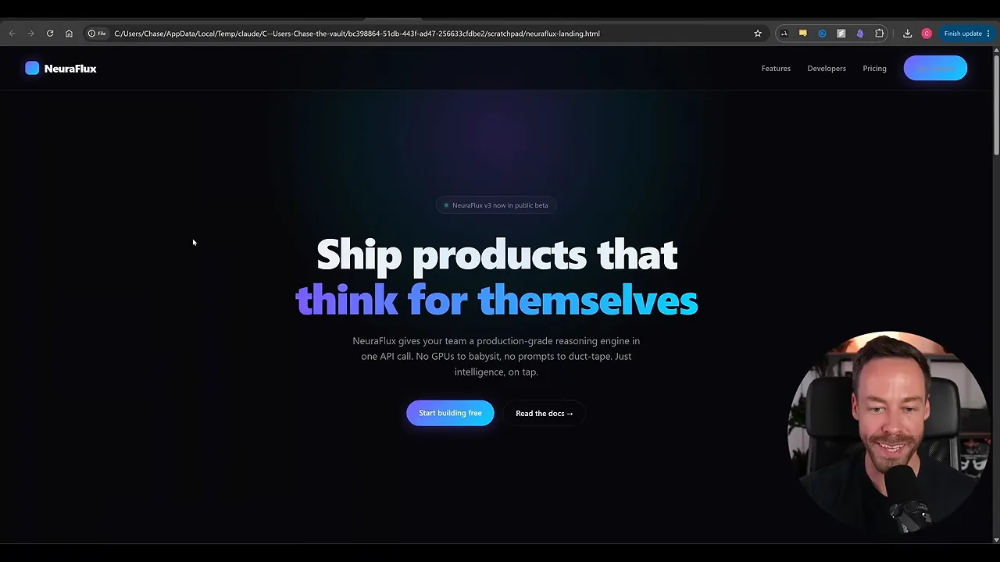
요즘 슬롭은 크림색 바탕에 큰 세리프 제목, 한 단어만 빨간 이탤릭으로 강조한 편집 디자인풍이에요. 더 나아 보이지만 여전히 프롬프트 한두 번으로 만든 티가 나요. 발표자는 문제가 기술이 아니라 '흔하다'는 데 있다고 봐요. 모델이 열 배 좋아져도 무엇을 흔하다고 느끼는지만 바뀐다는 거예요.
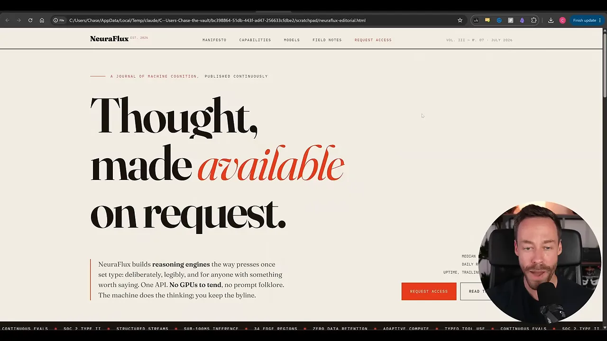
UI Collective의 '시니어 디자이너 3단계' 영상도 같은 변천을 짚어요. 처음엔 보라에서 파랑으로 넘어가는 그라데이션과 이모지 남발이었고, 요즘 Claude Design 결과물은 베이지 배경, 기울인 세리프 강조, 자리에 안 맞게 떠 있는 카드라는 거예요. 발표자는 마음에 드는 스크린샷 몇 장을 주고 "이런 느낌"이라고 말하는 건 주니어 방식이라고 해요. 도구와 MCP를 연결해 디자인 과정 안에 취향을 넣어야 한다는 거예요(13절).
MINDUNG의 도구 14개 영상은 이런 티를 스킬이 잡아내는 패턴으로 보여 줘요. Anthropic의 Frontend Design 스킬은 제목 위 작은 라벨, 대문자 라벨, 한 단어만 색을 바꾸는 강조를 피하게 해요. Chase AI가 보여 준 빨간 이탤릭 한 단어가 바로 마지막 패턴이에요. Hallmark 스킬의 검사 기능은 아래 화면처럼 제목 위 라벨과 똑같은 카드 세 장 배치에 'AI 티' 표시를 달아요.
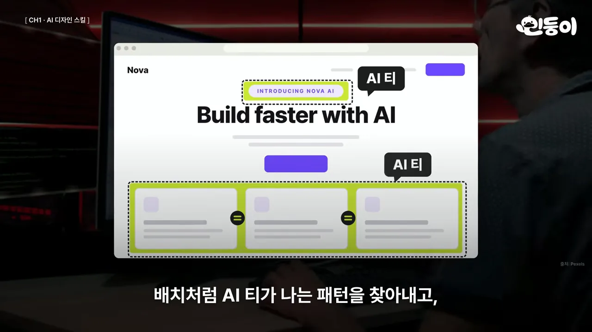
좀비 UI: 가장 그럴듯한 답의 끝
Stripe 디자인 총괄 Katie Dill은 이걸 건축사로 설명해요. 2차 세계대전 직후 건축 붐 때 건설사들은 모더니즘의 겉모양만 복제했고, 원칙은 점점 얇아져 맥락도 브랜드도 사용자도 신경 쓰지 않은 '좀비 빌딩'이 늘어섰어요. 지금의 AI 빌딩 붐에서 나오는 같은 결과를 그는 좀비 UI라고 불러요. 화면 속 랜딩 페이지 아홉 개는 문구만 다르고 구성이 똑같아요.
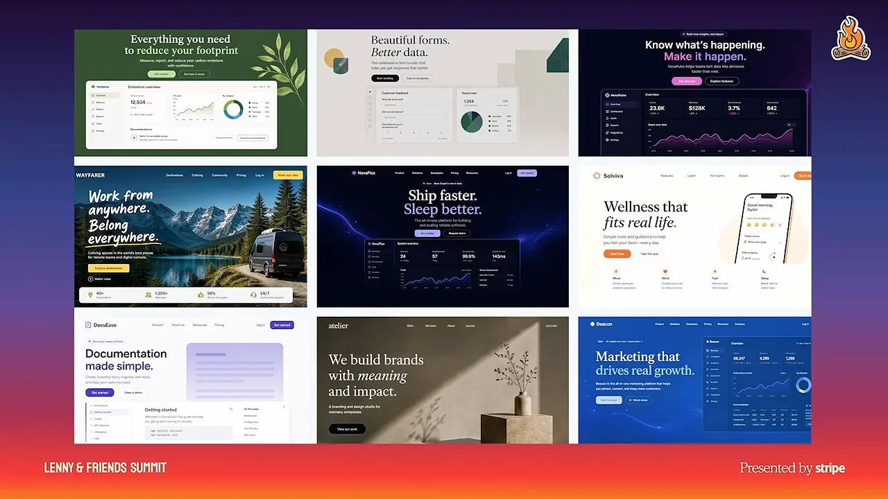
Dill은 좀비 UI로 가는 길목 세 곳을 짚어요.
- 가장 그럴듯한 답 — 소프트웨어 회사처럼 보이는 사이트가 사실 한국식 바비큐 식당이었어요. 그럴듯함이 맥락을 지워요.
- '다 됐다'의 유혹 — AI는 결과물을 너무 빨리 완성된 것처럼 보이게 해요. 90초 만에 데워 먹는 냉동 부리토처럼, 빠르다는 사실에 반해 맛없는 걸 참고 넘겨요.
- 쓰고 버리는 물건 — 너무 쉽게 만들다 보니 누가 유지보수할지 같은 장기 책임을 놓쳐요.
토스 출신 강영화 님은 같은 함정을 '딸각의 함정'이라고 불러요. 버튼 한 번에 만들어지니 도움이 될 것처럼 느껴지는 거예요. Claude Code로 디자인하면서 본인도 종종 빠졌대요.
모델은 좋은 디자인을 스스로 모른다
Griffin Wooldridge의 Mobbin 영상은 이 문제를 실험으로 보여 줘요. 레퍼런스 없이 Opus 5.5에게 메신저 앱 전체를 디자인하게 하자, 기능은 다 갖췄지만 여백과 정렬이 군데군데 어긋나고, 전체는 라이트 모드인데 내가 보낸 말풍선만 검은색이었어요. 발표자는 "80% 정도"라고 평가해요.

AI LABS의 저장소 영상도, Viktor Oddy의 3D 랜딩 페이지 영상도 같은 결론이에요. 좋은 디자인은 모델이 아니라 에이전트에게 쥐여 준 참고 자료와 점검 도구에서 나와요. 그래서 다음 절의 순서는 모두 'AI가 새로 정해야 할 것을 줄이는' 방향이에요.
AI로 디자인하는 순서
12절의 문제에 영상들이 내놓은 처방을 모으면 하나의 순서가 돼요. 핵심은 Nodi의 말 그대로예요. AI에게 더 잘 설명하려 애쓰기보다, 좋은 레퍼런스의 규칙을 넘겨서 AI가 고민할 것을 줄여 주는 거예요.
flowchart LR A["레퍼런스 고르기"] --> B["토큰을 뽑아 디자인 시스템"] B --> C["여러 안을 펼치기"] C --> D["고르고 변형하기"] D --> E["문장 다듬기"] E --> F["트윅 바로 마감"]
Nodi는 자기 흐름을 화면 한 장으로 정리해요. 컨셉에 맞는 디자인 레퍼런스 찾기, 디자인 시스템 기반으로 만들기, AI 생성 텍스트 검수하기예요. 셋 중 하나를 건너뛰면 각각 방향이 틀리거나, 결과가 흔들리거나, 문장에서 티가 난다고 해요.

1. 멋있는 것 말고 맞는 레퍼런스
Nodi는 Claude Design보다 레퍼런스 검색을 먼저 해요. 기준은 멋이 아니라 맞음이에요. 기업용 AI SaaS를 만드는데 화려한 사이트를 고르면 보기엔 멋져도 서비스 톤과 안 맞아요. 레퍼런스를 잘못 고르면 뒤에서 아무리 정교하게 작업해도 틀린 방향으로 정교해질 뿐이에요. 물을 질문은 하나예요. "이 디자인이 내가 만들 서비스와 잘 맞을까?"
어디서 찾을지는 영상마다 조금씩 달라요. Awwwards, Dribbble, Pinterest, X(트위터), 실제 앱 화면을 모은 Mobbin, 실제 서비스 디자인 시스템 2,000개 이상을 모은 styles.refero.design, getdesign.ai, Land-book이 나와요. 투더제이의 24초 쇼츠는 영감을 찾을 곳으로 Inspora를 꼽아요. Chase AI는 마음에 드는 화면을 모아 미학 계열별로 묶고 키워드까지 붙인 '영감 라이브러리'를 아예 작은 웹앱으로 만들어 써요. 처음부터 머릿속에서 짜내지 말고 이미 잘 되는 걸 기반으로 삼으라는 거예요.
Mobbin 영상은 레퍼런스를 AI가 직접 조사하게 해요. MCP로 Mobbin을 연결하고, 바로 다시 그리게 하는 대신 비슷한 앱들이 무엇을 잘하는지 HTML(HyperText Markup Language) 리포트부터 받아요. 리포트의 '누가 무엇을 잘하나' 표에는 WhatsApp, Telegram, Signal 같은 앱마다 가져올 점이 정리돼 있어요. 결론은 "패턴은 대체로 맞고, 시각 층을 통째로 다시 해야 한다"였어요.

UI Collective의 '시니어 디자이너 3단계'도 1단계를 Mobbin MCP로 시작해요. 강조점은 화면의 출처예요. Dribbble처럼 멋있지만 실제로 쓸 수 있는지 모르는 시안이 아니라, 좋은 팀이 만들고 사용자 테스트를 거쳐 출시한 화면 62만여 장이라는 거예요. 연결은 Claude 데스크톱 앱의 Customize → Connectors에서 Mobbin을 찾아 Connect를 누르면 끝이고, 화면·플로우·섹션 검색 도구 세 개가 생겨요.
이 영상은 MCP를 하나 더 붙여요. 레이아웃은 Mobbin에서 가져와도 히어로의 배경 이미지는 따라 만들기 어려워요. 그런 이미지가 손에 없으면 빈자리나 흔한 그라데이션으로 채우게 되죠. 그래서 Higgsfield MCP로 이미지를 직접 만들게 해요. Mistral AI 히어로의 주황 산맥 느낌을 살리되 회색 톤으로 바꿔 달라고 하자, 안개 낀 회색 산맥 위에 제목을 얹은 'Cairn' 페이지가 나왔어요.
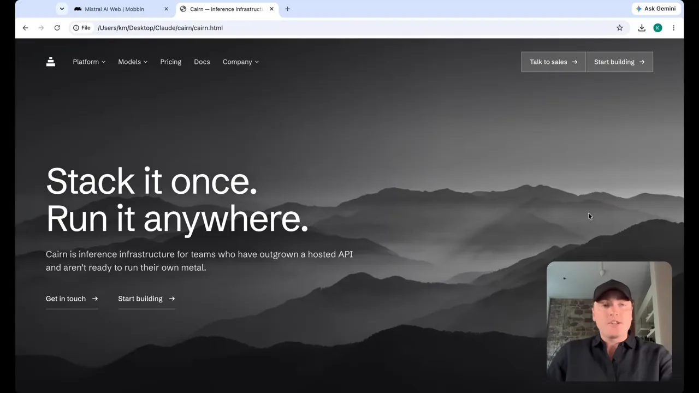
2. 레퍼런스를 디자인 시스템으로 바꿔요
레퍼런스를 캡처해서 이미지로 넘기지 않아요. 좋은 디자인에는 폰트 크기, 색, 간격, 버튼 모양처럼 반복되는 규칙이 있고, 그 규칙을 뽑아 넘겨요. Nodi와 AI LABS가 둘 다 쓴 도구가 Dembrandt예요. dembrandt <레퍼런스 URL>을 실행하면 그 사이트에 실제로 쓰인 테두리 둥글기, 버튼 색과 여백, 배지 스타일 같은 값이 나와요.

Nodi는 이 값을 바로 붙여 넣지 않고 Claude Design에 "추출된 토큰을 분석해서 디자인 시스템으로 만들어 줘"라고 해요. 결과물 한 장이 아니라 다시 쓸 수 있는 시스템이 생기고, 이후에는 "여백을 더 주세요" 대신 그 시스템을 기준으로 화면을 만들어요. AI LABS는 같은 값을 DESIGN.md로 저장해 에이전트가 따를 스타일 가이드로 써요. RoboNuggets의 25가지 요령도 1번이 디자인 시스템이에요. 빈칸부터 채우지 말고 마음에 드는 덱 PDF, 사이트, 스크린샷을 넣고 "이걸 디자인 시스템으로 바꿔 줘"라고 하면 돼요.
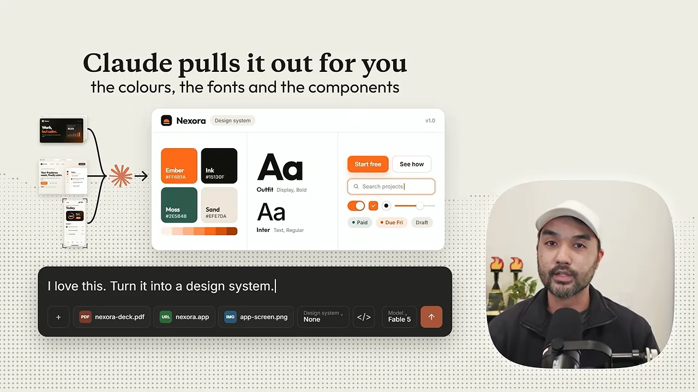
RoboNuggets는 AI 디자인이 가장 먼저 티 나는 곳으로 폰트, 문구, 아이콘을 꼽아요. 폰트는 Claude의 기본값을 그대로 두지 말고 Fontshare·Fontesk에서 골라 Fontjoy로 짝을 맞춰요. 아이콘은 Claude가 잘 못 그리니 Iconify나 Flaticon에서 한 스타일의 팩을 통째로 받아 넘기고, 새 그림은 SVG(Scalable Vector Graphics)로 달라고 해요. 문구는 내 분야 상위 다섯 곳의 패턴을 분석시켜 그 규칙을 디자인 시스템에 넣어요.
3. 넓게 펼치고 좁혀 가요
Chase AI는 한 번에 완성하려는 생각을 버리라고 해요. 프롬프트에 넣는 건 네 가지예요. 화이트보드에 손으로 쓴 틀이 그대로 레시피예요.
![어두운 화이트보드에 손글씨로 쓴 Prompt 틀. 1 Aesthetic [family] — [5-8 vocabulary terms], 2 Reference [screenshot] — match feel, not content, 3 Intent [what this should feel like and why], 4 Guardrails always [constants]. Never [bans]](assets/taste3-frame-1243.webp)
| 칸 | 무엇을 쓰나요 |
|---|---|
| 미학(Aesthetic) | 따를 디자인 계열과, 그 계열을 설명하는 어휘 5~8개 |
| 참고(Reference) | 취향 라이브러리의 스크린숏이나 실제 사이트 URL(Uniform Resource Locator) |
| 의도(Intent) | 무엇을 왜 만드는지. 누가 보는지, 읽기만 하는지, 버튼을 누르거나 폼을 채우게 할지 |
| 가드레일(Guardrails) | 항상 할 것과 절대 하지 않을 것. '보라 그라데이션 금지', 'Inter 금지' 같은 것 |
그다음은 그물을 넓게 던져요. 발표자는 가상의 AI 회사 사이트를 다섯 가지 미학으로 만들고, 같은 스타일을 왼쪽은 Impeccable, 오른쪽은 Taste Skill로 나란히 뽑았어요. 위쪽 탭이 다섯 방향이에요. 하나를 고르면 그 스타일로 세 가지 변형을 만들고, 다시 하나를 골라 세부를 만져요.
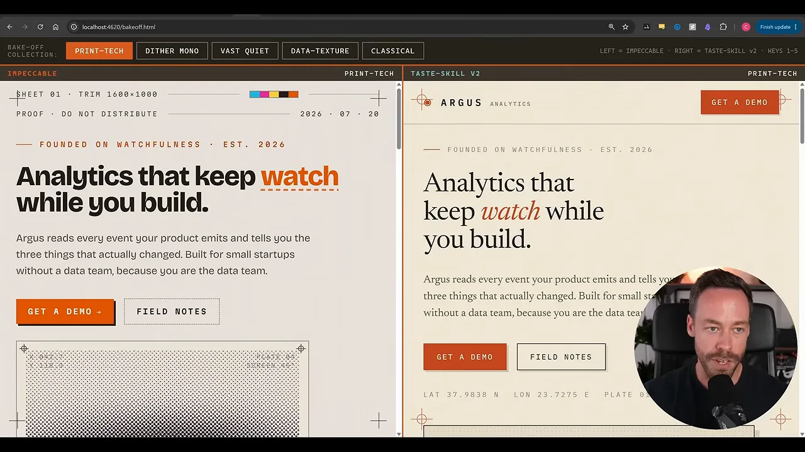
'AI로 디자인하기' 영상도 같은 원리를 무드보드로 써요. Claude Code로 레퍼런스 28개를 네 가지 스타일로 묶은 무드보드를 만들고, 그중 한 방향을 표면과 온기, 색과 강조 전략 같은 결정 여섯 개로 쪼개 PDF로 뽑아요. 이 문서를 지향 스킬로 만들어 두면 매번 색과 분위기를 설명하지 않아도 첫 시안이 원하는 방향에 가까워져요. Chase AI는 반대 방향의 경고도 해요. 수만 줄짜리 남의 design.md를 복사해 쓰면 매번 같은 결과가 나와요.
4. 문장은 따로 꺼내 다듬어요
디자인은 괜찮은데 글을 읽으면 AI 냄새가 날 때가 있어요. Nodi의 예시 서브타이틀 "멈춰 있는 로고가 아니라, 어디에 놓여도 살아 움직이는 시스템을 만듭니다"는 틀린 문장은 아니지만 곰곰이 읽으면 어색해요. 그래서 디자인은 그대로 두고 한글 텍스트만 내보내 다른 AI(영상에서는 ChatGPT)에게 고치게 해요. 화면처럼 문장마다 '현재'와 '추천'을 나누고 왜 어색한지 짚어 줘요.

RoboNuggets는 같은 일을 글투 스킬로 해요. 내 글 다섯 개와 금지어 목록을 담고, Google 개발자 문서 스타일 가이드나 Apple 스타일 가이드 같은 기존 규칙을 얹어요. 'Unlock the Power of AI' 같은 문장은 화면이 아무리 좋아도 사람들을 떠나게 한다는 거예요.
5. 마지막은 말 대신 손잡이로
"좀 더 고급스럽게" 같은 말로 AI에게 추측하게 하지 말고, 화면에 트윅 바를 띄워 달라고 해요. 제목·본문 글꼴, 크기, 굵기, 자간, 강조색까지 슬라이더로 직접 바꿔 봐요. 글꼴만 바꾼 페이지 열 개를 만들어 달라고 하는 것보다 훨씬 빨라요. Claude Design에는 Tweaks 패널이 있고, Claude Code에서는 같은 기능을 /tweak 스킬로 만들 수 있어요.
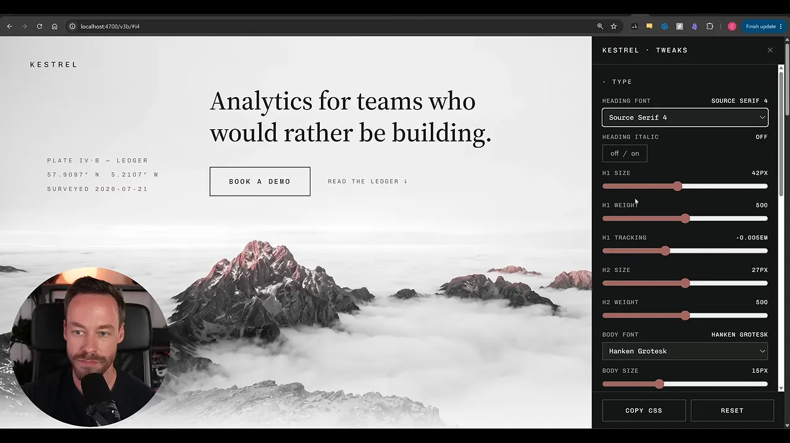
문제에서 제품까지, 단계마다 도구 나눠 쓰기
13절이 화면 하나의 생김새를 잡는 순서였다면, 이 절은 아이디어 한 줄에서 출시까지 가는 큰 흐름이에요. Griffin Wooldridge, UI Collective, 토스 출신 강영화 님 세 사람이 각자의 흐름을 보여 주는데, 공통점은 하나예요. 모든 걸 해 주는 도구는 없으니 단계마다 잘하는 도구를 고르고, 판단은 사람이 쥐어요.
일곱 단계, 그중 둘은 선택
Griffin Wooldridge의 흐름은 기존 UI/UX 디자이너에게 익숙한 일곱 단계예요. 다른 점은 단계마다 중심에 AI 조수가 있다는 것뿐이에요. 화이트보드에서 흐리게 표시된 와이어프레임과 Figma 다듬기 두 칸이 선택 단계예요.
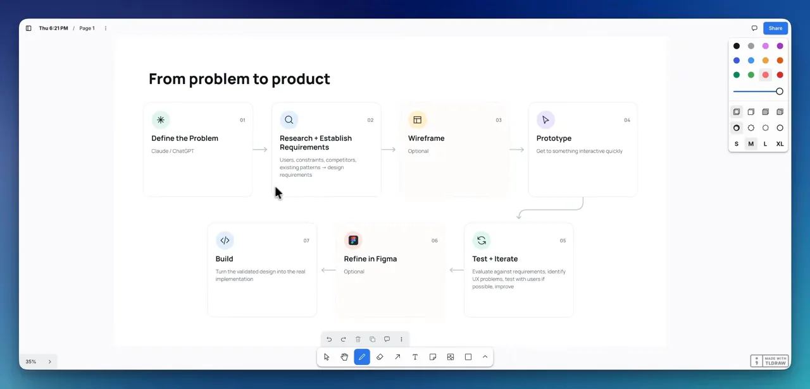
앞 단계의 결과는 다음 단계의 컨텍스트가 돼요. ChatGPT와 브레인스토밍한 문제 정의문("다른 사람과 무언가를 계획하려면 조율이 너무 많이 든다")과 리서치를 Notion 문서에 쌓고, 마크다운으로 내보내 Claude Code에 넣어요. 리서치에서 "모두에게 앱 설치를 요구하지 말 것"이라는 제약이 나오자 주최자는 앱, 손님은 모바일 웹으로 나누는 구조가 정해졌어요. 사용자 부분은 원래 실제 사람을 만나야 한다고 분명히 해요.
첫 프로토타입에서는 스타일보다 '화면과 기능이 맞는지'를 먼저 봐요. 세부 수정은 Claude 아티팩트의 댓글 기능이 편하다고 해요. 화면처럼 요소를 골라 동료에게 댓글 달듯 "이 아이콘 버튼과 다른 버튼들의 크기와 여백을 다듬어 줘"라고 써요. 큰 범위의 변경은 메인 프롬프트로 하고, 댓글은 구체적인 수정에만 써요.

픽셀 단위로 다듬고 싶으면 Figma MCP로 화면을 오토 레이아웃이 걸린 편집 가능한 프레임으로 보내고, 고친 뒤 Claude가 그 파일을 다시 읽게 해요. 실제 앱으로 만들 때는 한 번에 다 시키지 않아요. 웹 앱부터, 그리고 구현 계획부터 받아요. 한꺼번에 거대한 일을 맡기면 실수할 여지가 커지기 때문이에요.
도구는 잘하는 일로 나눠 맡겨요
UI Collective의 'AI로 디자인하기' 영상은 자산관리 대시보드를 만드는 같은 프롬프트를 여러 도구에 돌려 비교해요. 표의 시간과 토큰이 그 결과예요. Grok은 2분·47k 토큰으로 독특하고 좋은 구성을 냈고, Claude Fable 5는 약 17분·128.6k 토큰으로 가장 깔끔했어요. Opus 4.8과 Codex는 평범했어요.
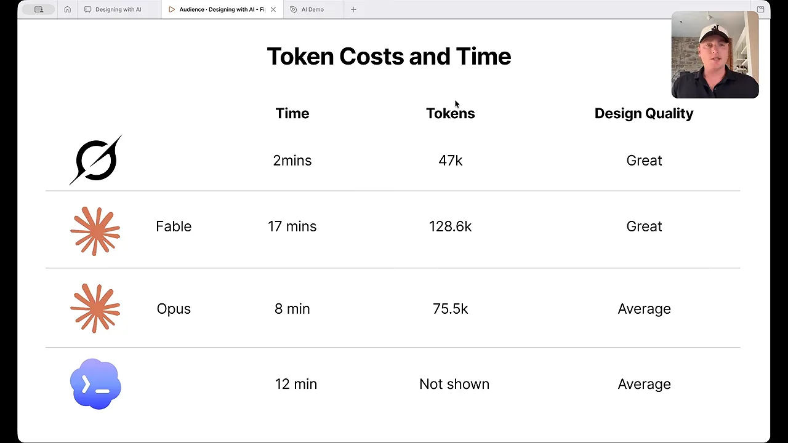
발표자가 얻은 교훈은 세 가지예요. 플랫폼은 모델과 같지 않아요. Cursor에서 Grok 모델을 돌린 결과는 Grok 자체 플랫폼보다 훨씬 AI스러웠어요. 직접 쓴 화면 프롬프트에 약한 도구(Figma AI, Google Stitch)도 도구가 추천하는 프롬프트나 흐름 단위 요청에는 꽤 괜찮았어요. 그리고 지금 가장 효율적인 도구 하나에 기대면 안 돼요. 회사가 그 도구를 안 쓸 수도 있으니까요. 그래서 발표자의 기본 흐름은 이렇게 나뉘어요.
| 단계 | 맡기는 도구 | 왜 |
|---|---|---|
| 반복 (다양한 선택지) | ChatGPT 이미지, Grok Build | 정확도보다 가짓수. ChatGPT는 20초쯤에 비교 이미지, Grok은 클릭해 볼 수 있는 화면 네 개를 Claude의 약 10분의 1 시간·비용으로 |
| 프로토타입과 자체 QA(Quality Assurance) | Google Antigravity | 브라우저를 직접 조작해 캡처하고, 창 크기를 바꿔 반응형을 확인하고, 본 것을 바탕으로 고쳐요. 알아서 안 하면 /browser로 시켜요 |
| 디자인 시스템 연결 | Claude Code + 디자인 시스템 스킬(10절) | 큰 디자인 시스템 맥락을 다룰 때 가장 정확했어요 |
| 캔버스 위에서 그리기 | Paper, pen.dev + 에이전트(MCP) | 결과는 괜찮지만 대시보드 한 장에 155.4k 토큰. 토큰 한도가 있는 회사에선 부담 |
발표자는 디자이너가 디자인 엔지니어 쪽으로 옮겨 가고 있다고 봐요. Figma만 잘 다뤄서는 부족하고 여러 AI 도구의 쓰임새를 알아야 하지만, 모든 회사가 AI를 쓰는 건 아니니 Figma 실력도 AI 실력만큼 갖춰야 해요. 코딩을 제대로 배울 필요는 없고, 개발자 없이 아이디어를 동작하는 모습으로 보여 줄 수 있으면 된다고 해요.
AI를 많이 쓰는 팀일수록 손으로 먼저
강영화 님의 흐름은 반대쪽 끝을 보여 줘요. 프로덕트 디자인은 PRD(Product Requirements Document) 텍스트와 Figma 와이어 초안을 Claude Design에 넣어 하이 피델리티 화면을 받고, 그걸 보며 UI를 확정해요. Claude Design이 "어떤 맥락에서 뭐가 필요해?"라고 되물어 줘서 답하는 동안 스스로 다시 생각하게 된다는 점을 좋게 봐요. 그런데 초반 의사 결정은 화이트보드와 손 스케치로 해요. 머릿속에 그림이 확실히 잡혀 있어야 다음 단계가 나아간다는 게 팀의 공감대예요.
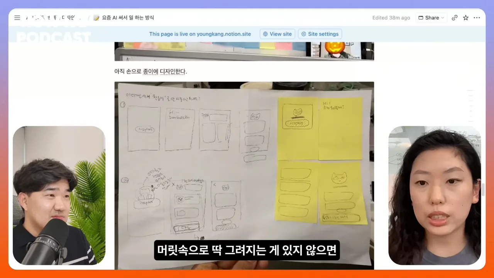
비주얼 작업도 같은 나눔이에요. Gemini에게 레퍼런스를 주고 "이미지 만들지 말고 구성 계획을 해 줘"라고 먼저 말해요. 그렇지 않으면 마음에 안 드는 이미지를 바로 만들어 버리거든요. 계획이 괜찮으면 이미지를 만들게 하고, 결과를 Figma로 옮겨 텍스트를 쪼개고 폰트를 바꿔 인쇄용으로 마감해요. 상상력이 필요한 초반은 AI에게, 엣지 있고 물성이 중요한 디렉팅은 사람이 가져가요.
막히는 지점별 도구·스킬 지도
영상들이 이름을 댄 도구와 스킬은 서른 개가 넘어요. 하나씩 외우기보다 '어디서 막혔을 때 꺼내는가'로 묶으면 쓸 곳이 보여요. MINDUNG의 쇼츠가 딱 이 방식이에요. 막히는 지점을 여덟 가지로 나누고 각각에 맞는 스킬이나 자료를 하나씩 붙여 순위로 소개해요. 같은 채널의 'TOP 14' 영상은 범위를 넓혀 디자인 스킬, 작업 공간, 웹 인터랙션, 모션 그래픽 네 갈래로 14개를 묶어요.

| 이럴 때 | 도구 · 스킬 | 하는 일 | 나온 영상 |
|---|---|---|---|
| 빈 화면 앞에서 색·폰트부터 막힐 때 | UI UX Pro Max | '카페 주문 앱'이나 '금융 대시보드'처럼 서비스를 말하면 스타일·팔레트·폰트·차트를 골라 사이트 전체 규칙으로 묶어 줘요 | TOP 8 · TOP 14 |
| 참고할 디자인 시스템이 없을 때 | styles.refero.design | 실제 서비스 디자인 시스템 2,000개 이상을 Claude가 읽기 좋은 형식으로 모아 뒀어요 | 25가지 요령 |
| 실제 앱 화면·흐름을 참고하고 싶을 때 | Mobbin (MCP) | 에이전트가 화면·흐름·웹 섹션을 직접 검색해요. MCP는 유료 플랜 | Mobbin · AI로 디자인하기 · 시니어 3단계 |
| 잘 만든 웹사이트를 참고하고 싶을 때 | Awwwards MCP | 수상작을 찾아 스크린샷과 링크로 보여 주고, 고른 사이트의 디자인과 움직임을 읽어 와요 | 저장소 6개 |
| 레퍼런스의 실제 값을 가져오고 싶을 때 | Dembrandt | 사이트에 쓰인 색·글꼴·간격을 뽑아 DESIGN.md로 저장해요. 수정 전후를 다시 스캔해 비교도 해요 | 저장소 6개 · 프롬프트부터 넣지 마세요 |
| AI가 늘 '큰 제목 + 카드 세 개'만 만들 때 | Hallmark | 페이지 뼈대부터 다르게 설계하게 해요. 48가지 테마 중 어울리는 셋을 먼저 보여 주고, AI 티와 모바일에서 잘리는 화면을 검사해요 | TOP 8 · TOP 14 |
| 디자인을 어떻게 지시할지 모를 때 | Taste Skill | 시각 방향을 먼저 정하고, 이미지를 찾고, 브라우저에서 결과를 직접 확인하는 순서로 일을 시켜요 | TOP 8 · TOP 14 · 취향 3단계 |
| 이미 만든 화면이 어딘가 촌스러울 때 | Impeccable | 스킬 하나에 명령 20여 개(영상마다 23개, 24개로 달라요). critique·polish·bolder·quieter·distill로 슬롭을 진단하고 고쳐요 | TOP 8 · TOP 14 · 취향 3단계 · 25가지 요령 · 시니어 3단계 |
| 폰트·색·배치에 일관된 방향이 없을 때 | Anthropic frontend-design | Anthropic 공식 스킬. 미니멀·레트로처럼 콘셉트를 먼저 정하고, 핵심 색을 이름 붙인 hex 값 4~6개로 정하라고 해요. TOP 14는 처음이라면 이것부터 권해요 | TOP 8 · TOP 14 |
| 보기엔 멀쩡한데 쓰기 불편할 때 | Vercel 웹 디자인 가이드라인 | 키보드 조작, 오류 표시, 포커스, 다크 모드, 다국어를 점검해요 | TOP 8 |
| 움직임이 툭툭 끊겨 싸 보일 때 | Emil Kowalski 스킬 | 애니메이션의 타이밍과 반응을 다듬어 손맛을 챙겨요. 리뷰 스킬은 오히려 빼야 할 움직임도 찾아요(16절) | TOP 8 · TOP 14 |
| 폰·태블릿에서 깨질 때 | Responsively (MCP) | 여러 화면 크기를 나란히 띄우고, 에이전트가 스크린샷을 보며 고쳐요 | 저장소 6개 |
| 섹션·효과를 처음부터 만들기 싫을 때 | 21st.dev · React Bits · Canvas UI | 에이전트에 넘기기 좋은 컴포넌트와 효과 모음. 21st.dev는 'Copy prompt'로 복사하고, React Bits는 효과가 215개 넘어요 | 25가지 요령 · 취향 3단계 · TOP 14 |
| 아이콘이 제각각일 때 | Iconify · Flaticon · Lordicon | 한 스타일 팩을 통째로 넘겨요. Lordicon은 움직이는 아이콘 | 25가지 요령 |
| 이미지·영상 소재가 필요할 때 | Higgsfield MCP | Claude Code에 이미지·영상 생성 능력을 붙여요 | 취향 3단계 · 시니어 3단계 · 3D 웹사이트 · 3D 게임 사이트 |
| 템플릿·배경·그라디언트 소재가 필요할 때 | Modulify · Backgrounds Supply · FeralUI | 템플릿은 Modulify, 배경은 Backgrounds Supply, 그라디언트는 FeralUI. 쓰기 전에 무료 범위와 라이선스부터 확인해요 | 웹사이트 8곳 |
| 앱 화면 시안을 여러 장 펼쳐 보고 싶을 때 | Google Stitch | 말로 설명하면 시안 여러 장을 한 판에 펼치고, 화면을 이어 눌러 볼 수 있는 프로토타입까지 만들어요. 정한 디자인은 DESIGN.md나 MCP로 Claude Code·Codex에 넘겨요 | TOP 14 |
| 웹·앱·발표 자료를 한 브랜드로 만들 때 | Open Design | 오픈소스 작업 공간. 홈페이지를 만든 뒤 같은 브랜드 규칙으로 발표 자료를 뽑는 식이에요 | TOP 14 |
| '부드럽게'를 말로 설명하기 어려울 때 | Keyframe Gallery · 60fps.design · Theatre.js | Keyframe Gallery는 실제 서비스의 UI 애니메이션 모음, 60fps.design은 모바일 UI 움직임, Theatre.js는 웹 애니메이션 도구예요 | TOP 14 · 웹사이트 8곳 |
| 같은 형식의 영상을 계속 뽑을 때 | Remotion · HyperFrames · Claude Motion | React로 만들면 Remotion, HTML로 만들면 HyperFrames, 코드 없이 대화로는 Claude Motion(지금은 Team·Enterprise 요금제 베타) | TOP 14 |
| 움직이는 장면의 프롬프트를 참고하고 싶을 때 | Awesome Opus 5.5 Videos | Opus 5.5로 만든 모션 그래픽·3D·게임 장면의 프롬프트 700개 이상. 400개 넘게 재현 결과까지 있어요 | TOP 8 · TOP 14 |
| 다 만든 앱을 알리고 싶을 때 | App Store Screenshots · Brag | 스토어 이미지와 20초 안팎의 출시 영상을 만들어요. Brag 영상 속 기능이 앱에 실제로 있는지는 확인해야 해요 | 저장소 6개 |
가장 많이 추천된 둘: Impeccable과 Taste Skill
세 영상이 겹쳐서 추천한 건 Impeccable이에요. Chase AI는 지금 최고의 프런트엔드 디자인 스킬로 꼽아요. 화면처럼 타이포그래피, 색과 대비, 공간 디자인, 반응형, 인터랙션, 모션, UX 글쓰기 일곱 영역을 보고, 사이트의 Slop 페이지는 슬롭을 46가지 패턴으로 나눠 설명해요. 라이브 모드에서는 화면의 컴포넌트를 하나씩 눌러 그 자리에서 고칠 수 있어요.
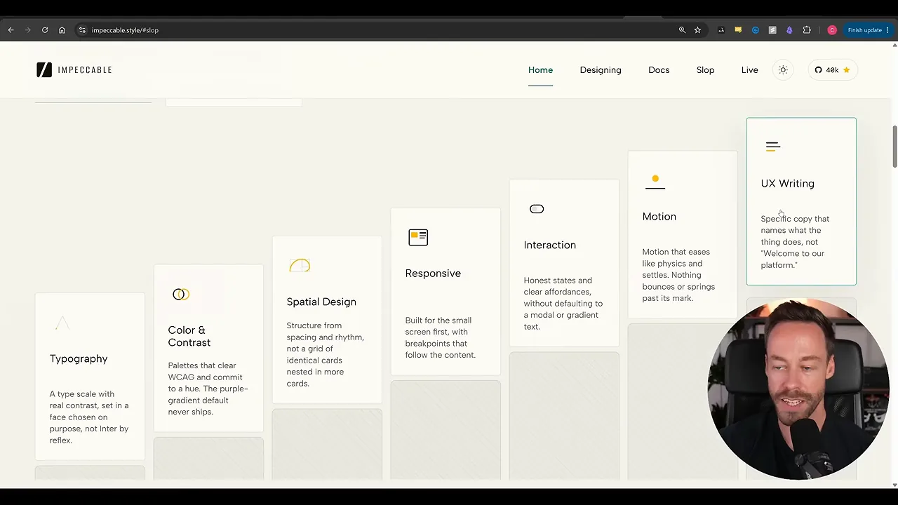
Chase AI는 대안으로 Taste Skill을 들고, 두 스킬이 Anthropic의 기본 frontend-design이나 UI UX Pro Max 같은 유명 저장소보다 한 단계 위라고 봐요. 그러면서 경고도 하나 해요. '스킬 하나만 더 있으면 디자인이 해결될 것'이라는 함정이에요. 멋진 결과를 내는 스킬일수록 범위가 좁고 처방이 강해서 한 가지 결과만 내기 쉬워요. 유연한 스킬을 고르되, 좋은 결과는 결국 프롬프트와 취향에 달려 있어요.
MINDUNG의 TOP 14는 둘의 쓰임을 이렇게 나눠요. Taste는 사이트 전체 분위기를 돌리고, Impeccable은 원하는 부분만 콕 집어 고쳐요. 예전 Taste는 레이아웃 과감함, 애니메이션 양, 정보 밀도를 각각 1~10으로 정했어요. 화면처럼 과감함만 올려도 같은 포트폴리오가 비대칭 레이아웃이 돼요.
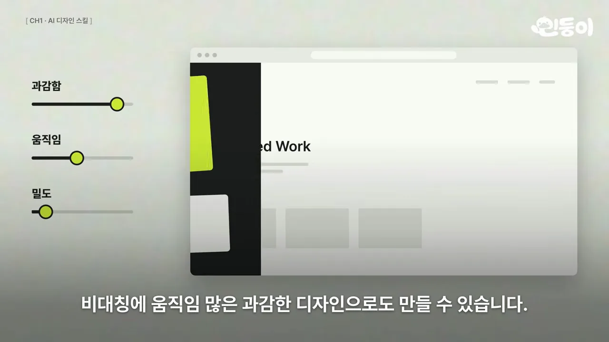
Impeccable 쪽은 '더 세련되게' 대신 첫 화면은 bolder, 정보가 많은 곳은 quieter처럼 부분마다 지시해요. UI Collective의 '시니어 디자이너 3단계'도 같은 말을 해요. "Impeccable, 고쳐 줘"라고만 하지 말고, 명령을 익히고 무엇을 바꿀지 정한 뒤 지시하라는 거예요. 데모에서는 Codex에게 카드 하나를 만들게 했더니 '진행 중' 태그, 일러스트, 진행 막대, 큰 버튼이 다 들어간 전형적인 AI 카드가 나왔어요.

"distill this design" 한 줄을 보내자 태그와 일러스트가 빠졌어요. 진행 막대는 다섯 칸짜리 레슨 표시로, 큰 버튼은 '이어서 학습하기' 링크로 바뀌었어요. 발표자는 이걸 '시니어 디자이너의 손길'이라고 불러요.

그런데 이 발표자는 결국 Impeccable 대신 직접 만든 스킬로 옮겨 가요. 이유는 세 가지예요. 토큰을 많이 써서 사용 한도가 작은 요금제에서는 금방 막혀요. 정해진 브랜드 가이드라인을 엄격하게 따르는 데는 약해요. 그리고 은행 같은 회사에서는 오픈소스 도구를 마음대로 설치할 수 없어요. 그 대안이 10절의 '작게 줄인 브랜드 스킬'이에요.
확인도 에이전트에게: 화면 크기와 디자인 값
AI LABS의 저장소 영상은 '만들기'보다 '확인하기'를 돕는 도구에 무게를 둬요. 노트북에서 공들인 사이트가 폰에서 깨지는 일은 흔해요. Responsively는 화면처럼 iPhone, iPad, MacBook Pro 크기를 나란히 띄워 함께 스크롤해요. MCP 서버를 연결하면 에이전트가 화면별 스크린샷을 받아 맞지 않는 곳을 찾고, 고친 뒤 다시 찍어 확인해요.

수정하다가 에이전트가 디자인을 실수로 바꾸는 일도 막을 수 있어요. Dembrandt로 수정 전 값을 저장해 두고, 수정 후 다시 스캔해 비교하게 하면 돼요. 화면의 After 카드에서 두 번째 색이 노랑에서 파랑으로 바뀐 게 그렇게 잡힌 거예요.

다 모으지 말고 하나씩 골라요
목록형 영상 두 편이 같은 말로 끝나요. MINDUNG의 TOP 14 마지막 화면은 도구를 '새로 만들기'와 '고치기'로 나눠요. 새로 만들 땐 Frontend Design, UI UX Pro Max, Hallmark, Google Stitch, Open Design, React Bits를, 이미 있는 디자인을 고칠 땐 Taste, Impeccable, Emil Kowalski, Keyframe Gallery를 꼽아요. 영상을 뽑을 거라면 모션 그래픽 갈래에서 고르면 돼요.

투더제이의 24초 쇼츠는 디자인할 때 여는 사이트 여덟 곳을 소개해요. 템플릿은 Modulify, 배경은 Backgrounds Supply, 포트폴리오는 Reelfolio, 영감은 Inspora, 모바일 UI 움직임은 60fps.design, 프롬프트는 One Prompt, 그라디언트는 FeralUI, 웹 애니메이션은 Theatre.js예요. 그러고는 여덟 곳을 다 저장하지 말라고 해요. 다 저장해 두면 결국 아무것도 안 열게 되기 쉬우니, 템플릿·배경·움직임에서 한 곳씩만 골라 실제로 써 보라는 거예요.
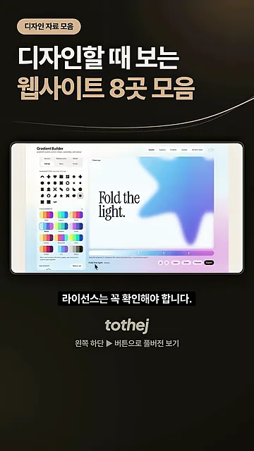
움직임: 넣을 때와 뺄 때
움직임을 두고는 영상들의 의견이 갈려요. 메타에서 Instagram·Threads 애니메이션을 만든 John Kim은 바이브 코딩 앱이 밋밋한 가장 큰 이유로 애니메이션을 꼽아요. Sam Crawford는 반대로 모션 위주 사이트를 2027년에 건너뛸 트렌드로 꼽아요. 둘을 나란히 읽으면 결론이 나와요. 움직임은 이유가 있을 때만 넣고, 넣는다면 제대로 알고 시켜야 해요.
왜 넣나요: 취향, 공예, 즐거움
John Kim이 꼽는 이유는 세 가지예요. AI도 애니메이션을 만들 수는 있지만 무엇이 좋은 느낌인지 판단할 기준이 없어서 결과가 어설퍼요(취향). AI가 찍어 낸 앱은 기능만 챙기고 움직임을 통째로 빼먹어서 공들인 흔적이 없어 보여요(공예). 작은 애니메이션 하나가 앱을 입소문 나게 만들기도 해요(즐거움). 그래서 "애니메이션 넣어 줘"라고만 하지 말고, 기법을 알고 시키라고 해요.
그가 정리한 치트 시트가 열두 칸이에요. 이 표를 에이전트에게 넣어 주면 대화하면서 방향을 잡기 쉽다고 해요.
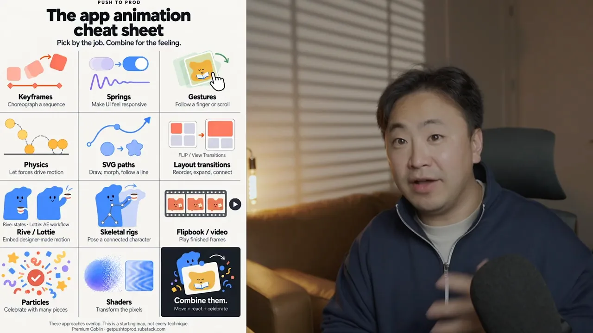
| 기법 | 무엇인가요 | 이럴 때 써요 |
|---|---|---|
| 키프레임 | 시작·중간·끝 몇 지점만 정하면 사이를 채워요 | A에서 B로 가는 정해진 연출 |
| 스프링 · 이징 | 같은 목표로 가도 Gentle·Snappy·Bouncy로 느낌이 달라져요 | 버튼처럼 누름에 반응하는 요소 |
| 제스처 | 손가락·커서 위치를 따라 움직여요 | 끌어서 옮기는 느낌, 목록 튕기기 |
| 물리 | 중력과 충돌을 흉내 낸 환경에 맡겨요 | 떨어지고 튕기는 현실 같은 움직임 |
| SVG 경로 | 경로를 따라가기, 선 그리기, 윤곽 모핑 | 모양이 바뀌는 장식 |
| 셰이더 | 그래픽 엔진으로 픽셀을 하나하나 계산해요 | 경로가 없는 이미지의 모핑, 특수 효과 |
| 레이아웃 전환 | 카드 순서가 바뀌거나 목록이 격자가 될 때 사이를 이어요 | 가장 적은 노력으로 고급스럽게 |
| Rive · Lottie | 애니메이션 전용 편집기 | 캐릭터처럼 눈으로 다듬어야 하는 것 |
| 스켈레탈 리깅 | 뼈대를 심어 부위를 따로 움직여요 | 정교한 캐릭터, 물리와 합치면 래그돌 |
| 파티클 | 작은 조각을 한꺼번에 뿌려요 | 완료 축하 같은 순간 |
| 플립북 · 영상 | 그린 그림을 넘기거나 완성 영상을 재생만 해요 | 전통 애니메이션, 미리 구운 장면 |
퍼즐 앱의 한 장면에 이게 다 섞여 있어요. 조각을 끌면 제스처가 동작하고, 놓는 순간 파티클이 튀고, 조각이 살짝 튕기며 자리를 잡아요(스프링). 둥근 가장자리는 셰이더로 처리해요. 슬라이드 왼쪽 네 줄이 퍼즐을 다 맞췄을 때 겹쳐 돌아가는 기법이에요.
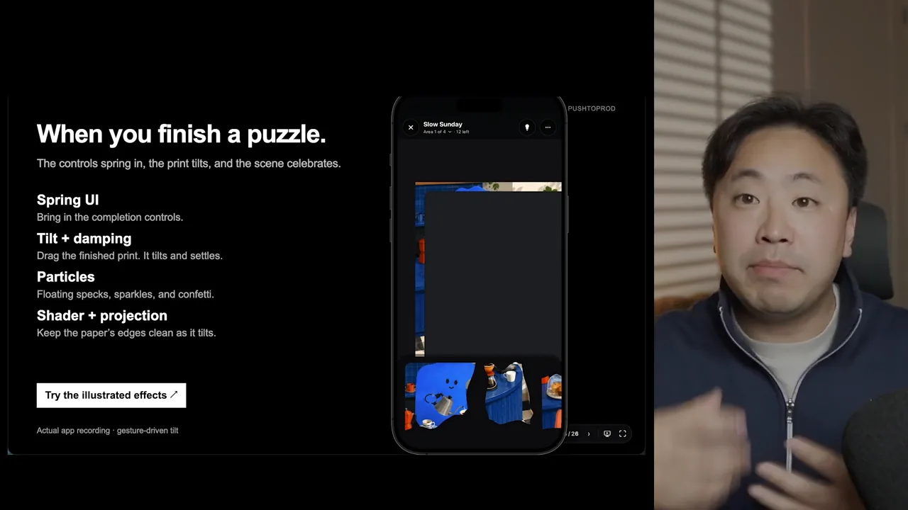
캐릭터 애니메이션은 Rive로 만들었고, 그 작업을 전부 에이전트로 했어요. 편집기에 MCP나 CLI(Command Line Interface)가 없어서 Codex의 컴퓨터 사용으로 화면을 직접 조작하게 했어요. 핵심 설계는 상태 머신의 휴식 상태예요. 모든 동작이 끝나면 늘 같은 휴식 상태로 돌아오게 짜야 어떤 동작이든 같은 지점에서 시작하고 끝나요. 다만 가장 넓게 찌그러질 때 가장자리가 잘리는 문제는 테스트로 안 잡히고 눈으로 봐야 보였어요. 기법을 알면 "버튼 느낌이 이상하니 이징을 바꾸자"처럼 원인을 짚을 수 있어요.
기법 이름을 모를 때 쓸 길도 있어요. MINDUNG의 도구 14개 영상은 "부드럽게 해 줘" 대신 마음에 드는 사례를 보여 주고 "이렇게 만들어 줘"라고 하라고 해요. 그 사례를 찾는 곳이 실제 서비스의 화면 전환, 메뉴 펼침, 버튼 반응을 모은 Keyframe Gallery예요. 이미 만든 효과를 골라 쓰려면 React Bits를 보고, 속도와 감속 곡선 계산은 Emil Kowalski 스킬의 animate에 맡겨요(15절).
기본 효과는 짧고 부드럽게
코드깎는노인의 용어 영상은 일상적인 효과의 기준을 숫자로 보여 줘요. 0.2배속으로 늦춰 보면 왼쪽처럼 즉시(0ms) 바뀌는 알림은 뚝 끊기고, 오른쪽처럼 200ms 정도로 이으면 자연스러워요. 카드는 동시에 나타나기보다 0.1초 간격으로 시간차를 두면 흐름이 생겨요.

움직임을 불편해하는 사람도 있어요. 패럴랙스처럼 앞뒤가 다른 속도로 움직이는 효과는 약하게 쓰고, 운영체제의 '동작 줄이기' 설정을 켠 사용자에게는 줄여요. 화면의 접근성 패널 맨 아래 스위치가 그 설정이에요. 코드로는 prefers-reduced-motion을 확인해요. MiladiCode의 3D 전용기 사이트는 위쪽 Full motion 버튼을 누르면 움직임을 줄인 모드로 바뀌게 만들었어요.

빼야 할 때: 스크롤재킹과 기다리게 하는 연출
Crawford가 건너뛰라는 건 모션 위주의 사이트예요. AI로 화려한 모션을 쉽게 만들 수 있게 되면서 과해지기 쉬운데, 가장 나쁜 예가 스크롤재킹이에요. 포트폴리오나 실험으로는 멋지지만 일반 비즈니스 사이트에서는 페이지의 본업과 싸워요. 그가 내놓는 시험은 두 가지예요.
- 애니메이션을 멈춰도 페이지가 제안을 설명하나요?
- 느린 기기에서 연출이 끝나길 기다리지 않고 주요 CTA까지 갈 수 있나요?
Emil Kowalski 스킬의 리뷰 기능도 같은 쪽을 봐요. 기존 애니메이션에서 어색한 곳뿐 아니라 오히려 빼야 할 움직임까지 찾아요. 모션이 자리를 얻는 건 시선을 이끌거나, 변화를 설명하거나, 유용한 피드백을 줄 때뿐이에요. 프롱트가 장바구니 합계에 숫자 애니메이션을 넣으면서 "큰 변화가 생기는 값에만"이라고 단서를 단 것도, 스켈레톤 로딩으로 기다림을 보여 주는 것도, 마이크로 인터랙션으로 눌렸다는 걸 알려 주는 것도 모두 이 세 이유 중 하나예요.
3D와 영상으로 첫 화면 살리기
랜딩 페이지의 첫 화면을 3D와 영상으로 살리는 영상이 다섯 편 있어요. 모두 코드를 직접 쓰지 않고 AI에게 맡기는데, 결과를 가르는 건 모델이 아니라 넘겨주는 재료라는 점이 같아요. 이 절은 UI/UX에 닿는 부분만 짧게 모았어요.
같은 AI, 세 가지 차이
Viktor Oddy는 같은 AI로 만든 두 페이지를 나란히 놓아요. 왼쪽 'SLOP'은 보라 그라데이션에 흔한 문구가 들어간 페이지, 오른쪽 'FIXED'는 벌새와 해바라기가 있는 페이지예요. 아래 문구처럼 둘의 차이는 세 가지라고 해요.
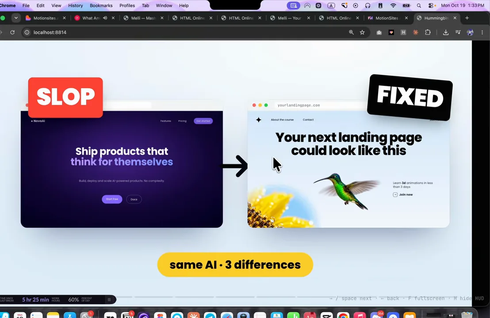
그 세 가지는 첫 화면을 채우는 히어로 이미지, 커서나 스크롤에 반응하는 3D 물체 하나, 그리고 글꼴·줄 수·동작까지 적은 정확한 프롬프트예요. 세 번째 카드에 적힌 예시처럼 "새가 커서를 따라가게"까지 구체적으로 써요.

그의 히어로 다듬기 방법은 이래요. 마음에 드는 레퍼런스 사이트와 Claude가 만든 초안을 둘 다 캡처해 이미지 생성 모델에 넣고 "첫 번째처럼 만들되 스타일은 두 번째로"라고 해요. 나온 이미지를 Claude에 붙여 넣고 "글꼴과 모든 요소의 위치를 이 이미지에 맞춰 줘"라고 하면 훨씬 나아져요. 나머지 페이지는 레퍼런스 사이트를 스크롤하는 화면을 녹화해 Claude에 넣고 한 번에 만들어요. 레이아웃과 배치만 참고하고 브랜드와 가격 같은 내용은 내 것으로 바꿔야 복제품처럼 보이지 않아요.
싼 것으로 방향을 정하고 비싼 것으로 넘어가요
Create a Pro Website의 3D 웹사이트 영상은 프롬프트를 여러 번 붙여 넣는 대신 CLAUDE.md 지시서 한 파일이 작업 순서를 이끌어요. 브랜드 키트 → 히어로 → 3D·영상 → 사이트 → 수정 → 배포 여섯 단계를 Claude가 질문하며 진행하고, 사람은 단계마다 고르고 승인해요. 미디어는 Higgsfield 커넥터로 만드는데, 화면처럼 단계마다 크레딧 견적부터 보여 주고 승인을 받아요.

Claude는 바큇살처럼 가는 부품이 3D 변환에서 잘 뭉개진다는 위험도 먼저 알려 줬고, 완성 뒤에는 스펙 숫자가 아직 지어낸 값이고 예약 폼은 서버 없이 메일 앱을 여는 방식이라고 따로 밝혔어요. MiladiCode의 전용기 사이트에서도 에이전트가 같은 식으로 보고했어요. 기체 이름과 스펙 숫자는 자리 표시용으로 지어 넣었고, 부드러움·소리·모바일 스와이프는 직접 확인하지 못했다고 따로 적었어요. 첫 결과가 그럴듯해도 이런 임시값을 실제 값으로 바꾸고 확인 못 한 곳을 직접 보는 일은 사람 몫이에요. 스크롤 중 3D 그림자가 갑자기 나타나는 버그는 그 프레임을 캡처해 붙이고 부드럽게 해 달라고 하자, 그림자가 빛 번짐 레이어 아래에 그려지던 원인을 찾아 고쳤어요.
주인공 모델은 파일로, 움직임은 녹화로
MiladiCode의 두 영상은 재료를 더 구체적으로 나눠요. 전용기 사이트에서 참고 이미지만 줬더니 구름 배경은 그럴듯했지만 비행기 모델은 디테일이 부족했어요. 그래서 주인공이 되는 3D 모델은 Sketchfab에서 GLB(GL Transmission Format Binary) 파일로 받아 직접 넣고, 배경만 AI에 맡겨요. 받은 모델은 작성자 표기가 필요하고 상업적 이용은 되는 라이선스였어요. 게임 사이트는 캐릭터 그림 한 장을 Higgsfield로 전신·투명 배경으로 다듬고, Tripo에서 GLB로 바꿔 넣었어요. 뼈대가 없는 모델이었는데, Claude가 Blender로 리깅과 걷기 동작까지 만들었어요. 다만 첫 걸음은 다리가 뻣뻣해서 한 번 더 고쳐야 했어요.
움직임은 글보다 녹화로 보여 줘요. 게임 사이트는 참고 사이트의 스크롤 동작을 화면 녹화해 프롬프트에 붙이고, 요구 사항에 번호를 매겨 적었어요. 화면의 1번이 캐릭터 걷기, 2번이 스크롤에 따라 캐릭터 둘레를 도는 카메라예요. 2번에는 "첫 장면은 영상처럼 얼굴에 너무 붙지 말라"는 차이까지 적혀 있어요. 전용기 사이트는 녹화 대신 카메라 전환 다섯 개를 한 줄씩 적고, 스크롤 한 번이 카메라 이동 한 번이 되게 정했어요.

게임 사이트는 마지막에 TestSprite로 실제 사용자처럼 눌러 보는 엔드투엔드 테스트를 돌렸어요. 미리보기에서 멋져 보여도 버튼이 안 눌리거나 겉모습만 있는 기능이 남을 수 있거든요. 실제로 검색창은 그럴듯한 모양만 있고 아무 일도 하지 않았고, 소리 버튼은 눌러도 모양이 그대로였어요. 화면 위쪽 로그의 7/8 통과가 그 결과이고, 아래 문단이 Claude의 진단이에요.

영상을 스크롤로 넘기기
'AI로 디자인하기' 영상의 마지막 데모도 같은 원리예요. 흰 배경의 빨간 Tesla 이미지를 만들고, Figma에서 배경을 넓힌 뒤 좌우를 뒤집어 시작·끝 프레임 두 장을 만들어요. 영상 모델에 두 장을 주면 차가 도는 5초 영상이 나오고, 이 영상을 프레임 이미지로 쪼개 스크롤 위치에 따라 프레임과 문구가 바뀌게 해요. 영상을 반복 재생하는 대신 사용자가 스크롤로 직접 움직이는 경험이에요.
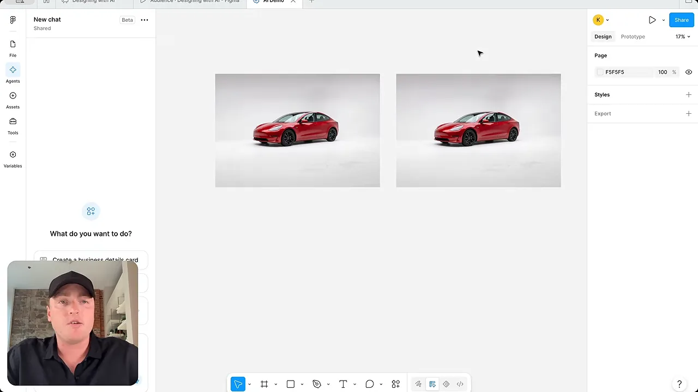
배포는 영상마다 달라요. Oddy는 완성 폴더를 Vercel 화면에 끌어다 놓고(무료 Hobby 플랜은 비상업용), 3D 웹사이트 영상은 Hostinger 커넥터로 Claude가 고른 도메인에 직접 올려요. MiladiCode의 전용기 사이트는 만든 서비스(Runable) 안에서 Publish를 눌러 1분 안에 공개 주소를 받아요. 다만 16절의 시험은 여기서도 그대로예요. 3D와 영상을 멈춰도 페이지가 무엇을 파는지 설명하는지 확인해요.
AI 시대에 사람이 쥐고 있어야 할 것
AI가 초안을 빨리 만들어 주면 사람에게는 무엇이 남을까요. 토스 출신 강영화 님, Stripe의 Katie Dill, Sam Crawford 세 사람은 서로 다른 자리에서 같은 답을 해요. 만드는 일은 싸졌고, 무엇이 좋은지 가리는 일이 비싸졌다는 거예요.
판단력이 새 기술이에요
Crawford는 AI 초안의 문제를 이렇게 짚어요. 경험 없는 눈에는 초안이 완성품처럼 보여요. 버튼은 다 눌리고 페이지는 그럴듯한데, 방문자는 메시지 다섯 개 사이에서 길을 잃고 중요한 증거와 버튼은 군더더기에 묻혀요. AI는 지시를 그대로 완성할 뿐 그 지시가 틀렸다고 반박하지 않아요. 경험 있는 디자이너는 위계가 어디서 무너지는지 미리 보고, 첫 결과물을 버릴 때도 알아요.
그가 든 Prova Health 사례에서는 페이지 10개를 추가하는 일이 예전엔 2주, 약 30시간 걸렸지만 이제 1~2시간의 입력으로 끝나요. 슬라이드가 그 남는 시간을 어디에 쓰는지 보여 줘요. 다음 페이지가 같은 위계를 지키는지, 내용이 맞는 컴포넌트에 들어갔는지, 모바일에서도 말이 되는지, AI가 무언가를 지어내거나 망가뜨리지 않았는지 확인하는 데 써요.

Katie Dill의 네 가지
Dill은 12절의 좀비 UI를 막는 방법을 네 줄로 정리해요. 관점을 가질 것, 기준을 기계에 심을 것, '다 됐다'와 '좋다'를 헷갈리지 말 것, 창의성과 예술성을 풀어놓을 것이에요.
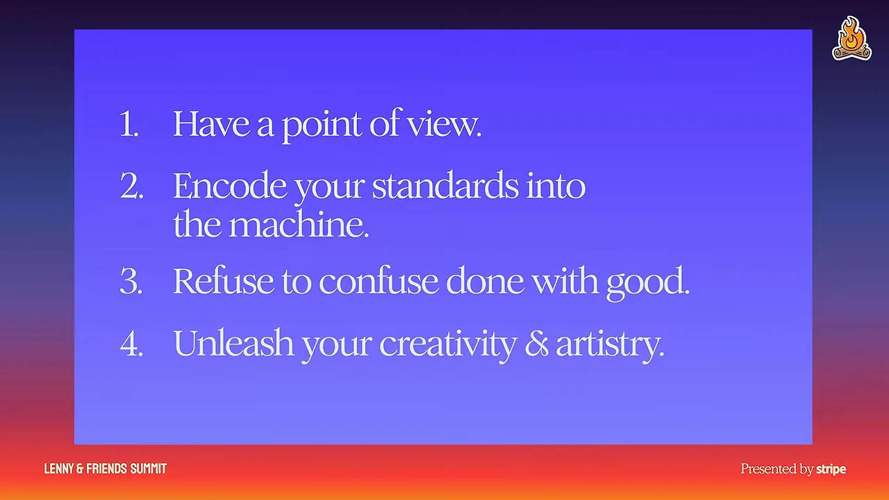
- 관점을 가져요 — 브랜드가 사용자에게 어떤 존재가 되고 싶은지 정해요. Stripe는 '낙관'을 색, 글, 출시하는 제품에까지 담아요. 목표는 완벽이 아니라 고객이 볼 수 있는 것보다 한 단계 더 깊이 가는 거예요.
- 기준을 기계에 심어요 — 디자이너가 늘 옆에서 빈칸을 채우던 때와 달리, 이제는 결정을 미리 적어 둬야 해요. 디자인의 대상이 화면에서 시스템으로 바뀐 거예요(8~10절).
- '다 됐다'와 '좋다'를 구분해요 — Christopher Alexander의 말처럼 모든 규칙을 지켜도 시스템은 죽어 있을 수 있어요. 시스템은 바닥일 뿐이에요.
- 창의성을 풀어놓아요 — AI는 단조로움을 찍어 낼 수도 있지만 가장 강력한 창작 촉매이기도 해요. 채팅, 차트, CLI가 이 시대 인터랙션의 최고일 리 없다고 봐요.
두 번째 줄의 실제 모습이 Stripe의 디자인 시스템 CLI예요. 처음엔 디자인 문서를 아는 MCP를 썼지만 같은 프롬프트로 세 사람이 세 가지 결과를 얻을 만큼 들쭉날쭉했어요. 지금은 화면처럼 명령 한 줄로 컴포넌트 이름, 설명, 패키지, 속성 목록을 돌려주는 CLI를 하네스로 써요. 필요한 문서를 필요한 때만 읽혀서 컨텍스트가 썩는 걸 막고, 부품뿐 아니라 템플릿과 흐름까지 담아 훨씬 의견이 분명해졌어요.
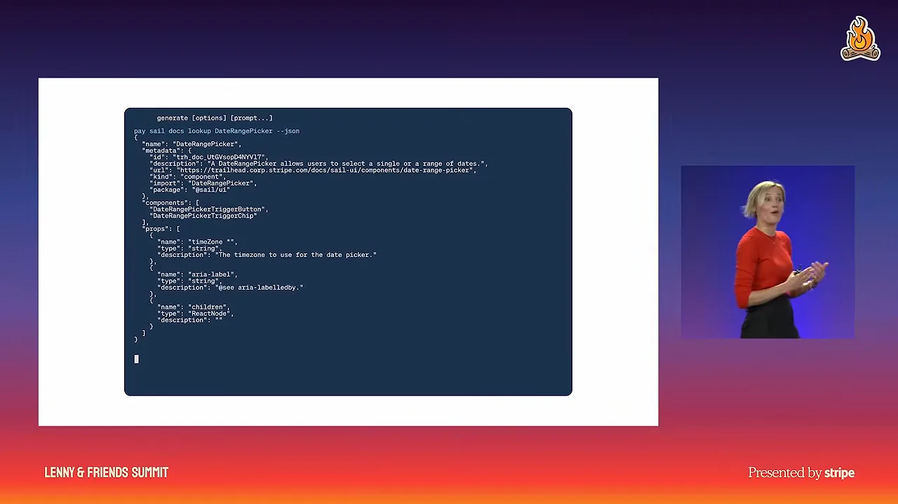
세 번째 줄에서 Dill이 가장 힘주는 역할이 편집자예요. 예전엔 아이디어 20개 중 하나만 인력을 붙일 수 있어 시작 전부터 걸렀지만, 이제는 일주일에 20개를 다 만들 수 있어요. 대신 거르는 일이 만든 뒤로 밀렸고, 이미 만든 걸 거절하기는 훨씬 어려워요. 편집을 잘하려면 사용자처럼 직접 겪어 봐야 해요. 정말 문제를 푸는지, 따로 볼 땐 좋은데 여정으로 이으면 어색하지 않은지 봐요. 행사 오프닝 애니메이션도 AI로 움직임을 입힌 첫 버전은 어색했고, 56번 반복한 끝에 생기 있는 결과가 나왔어요.
덜어 내는 눈과 사용자를 만나는 발
강영화 님의 Else 첫 버전은 화면 지도만 봐도 기능이 얼마나 많았는지 보여요. 회색 캔버스 위쪽에 작은 앱 화면 수십 장이 여러 줄로 퍼져 있어요. 미국에서 3개월을 쏟았지만 사용자는 원하지 않는 기능이었고, 원할 만큼의 퀄리티도 아니었어요.

2주 만에 만든 다음 버전은 온보딩, 세션, 코스 세 묶음만 남았어요. 결제 기능까지 빼고 핵심 가설 하나를 검증할 수 있는지만 봤어요.
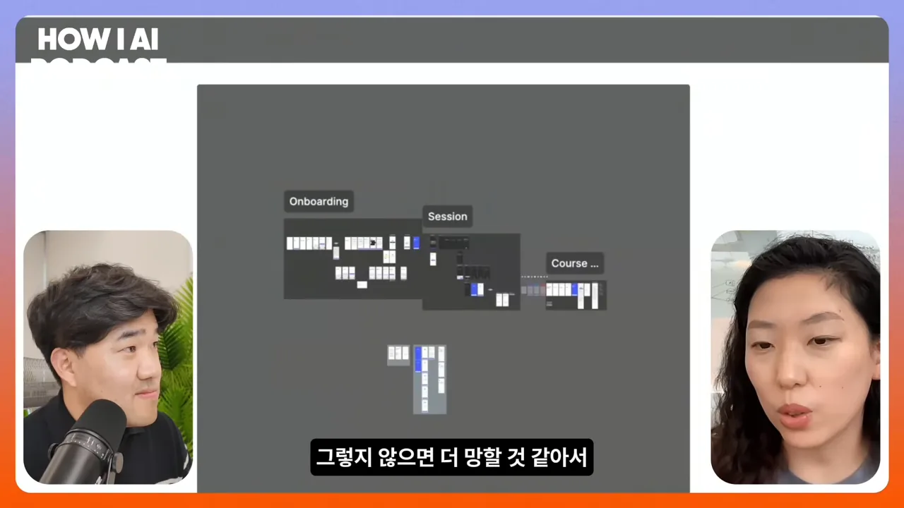
바이브 코딩으로 제품을 만든 사람에게 그가 주는 피드백은 거의 하나예요. 유저를 만나라는 거예요. 코딩도 디자인도 배운 적 없는 인스타툰 작가가 Claude Code로 만든 계정 분석 도구는, AI와 함께 질문지를 만들어 10명쯤 만난 뒤 크게 나아졌어요. 토스에서 배운 것도 같아요. "이걸 만들 수 있다"는 임팩트가 작았고, "사용자가 이걸 불편해한다"는 임팩트가 컸어요.
감각을 키우는 방법은 세 사람 모두 비슷해요. 좋은 것을 많이 보고, 왜 좋은지 글로 정리해 보는 거예요. Chase AI의 영감 라이브러리, RoboNuggets의 참고 자료 라이브러리도 결국 이 연습을 도구로 만든 거예요. Dill은 팀을 이끈다면 AI를 쓰라고만 하지 말고 탐색할 여유를 주고 '이상한 것'을 지켜 주라고 말해요. 사용자는 30분 만에 만든 화려한 애니메이션이 아니라, 문제를 풀어 주고 필요를 미리 내다본 디테일에 감동하니까요.
화면을 내보내기 전 점검표
앞 절들의 규칙을 화면 하나를 내보내기 전에 훑어볼 점검표로 모았어요. 괄호 안 숫자가 자세한 설명이 있는 절이에요. AI가 만든 화면이라면 이 목록을 그대로 에이전트에게 주고 점검시켜도 돼요.
기준과 내용
- 처음 온 사람이 한 번 읽고 무엇을 하는 곳인지, 누구를 돕는지, 왜 믿어야 하는지, 다음에 뭘 할지 말할 수 있나요? (2)
- 리뷰·가격처럼 결정에 필요한 정보가 제목 가까이, 위에서부터 차례로 있나요? (2)
- 빼도 되는 기능, 빼도 되는 문구를 뺐나요? (2, 18)
- 문장이 AI처럼 읽히지 않나요? 텍스트만 꺼내 다른 눈으로 읽어 봤나요? (13)
기본기
- 간격이 8의 배수(또는 정한 스케일)만 쓰고, 가까운 것일수록 좁은가요? (3)
- 왼쪽 시작선이 화면 전체에서 하나인가요? 표의 숫자는 오른쪽 정렬인가요? (3)
- 버튼이 입력 칸보다 크고, 강조색은 가장 중요한 행동 하나에만 있나요? (4)
- 글꼴 패밀리는 하나이고, 글자 크기는 정한 비율의 사다리를 따르나요? (4)
- 큰 그림자는 한 화면에 하나이고, 그림자 색은 배경 색조에서 왔나요? (5)
- 사진들이 같은 배경·조명·광원을 따르나요? (5)
사용성과 접근성
- 입력 검사는 칸을 벗어난 뒤에 하고, 틀린 칸으로 데려가나요? (6)
- 빈 화면, 에러, 업로드 중처럼 기다리거나 실패하는 순간에 다음 행동이 보이나요? (6)
- 확인 창 대신 실행 취소를 쓸 수 있는 곳은 바꿨나요? (6)
- 이미지 자리를 미리 잡아 화면이 들썩이지 않나요? (6)
- 키보드만으로 메뉴·폼·주요 버튼에 닿고, 포커스 링이 보이나요? (7)
- 버튼·본문·입력 칸이 대비 기준('AA')을 통과하나요? (7)
- 상태를 색 하나로만 말하는 곳은 없나요? 켜짐·꺼짐 같은 상태가 화면에 보이나요? (7, 17)
- 누르는 영역이 44×44pt 이상인가요? (4, 7)
시스템과 움직임
- 새로 쓴 색과 값이 Mapped 토큰에서 왔나요? 컴포넌트 전용 토큰을 만들지 않았나요? (8)
- 새 컴포넌트가 버튼과 같은 틀(오토 레이아웃·토큰·속성·베리언트·포커스)을 따르나요? (9)
- 움직임마다 '시선 유도, 변화 설명, 피드백' 중 하나의 이유가 있나요? (16)
- 애니메이션을 멈춰도 페이지가 설명되고, 동작 줄이기 설정을 존중하나요? (16)
- 폰·태블릿·노트북 크기에서 각각 확인했나요? (15)
- 실제 사용자처럼 눌러 보는 테스트로, 겉모습만 있고 동작하지 않는 기능을 걸러 냈나요? (17)
- 가져다 쓴 템플릿·배경·이미지·3D 모델의 무료 범위와 라이선스를 확인했나요? (15, 17)